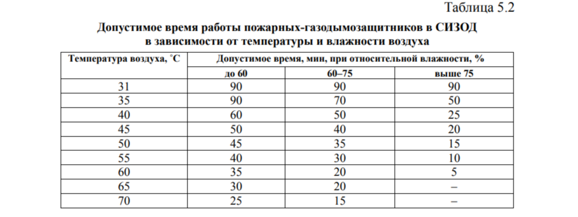
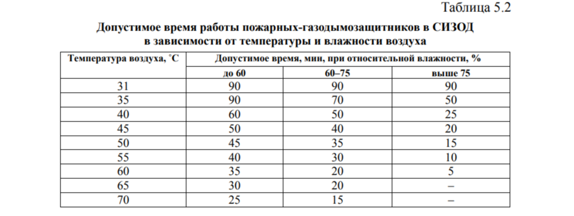

БАЗА ЗНАНИЙ
Пожар –
комплекс физико-химических явлений, в основе которых
лежат нестационарные (изменяющиеся во времени и пространстве) процессы горения,
тепло- и массообмена. Пожаром считается неконтролируемое горение, приводящее к
ущербу.
Для специалистов пожарной охраны можно дать развернутое определение: «Пожаром
называется процесс горения, возникший непроизвольно
(или по злому умыслу), который будет развиваться, и продолжаться до
тех пор, пока либо не выгорят все горючие вещества и материалы, либо не
возникнут условия, приводящие к самопотуханию (случай весьма редкий,
но возможный), либо пока не будут приняты активные специальные меры
по его локализации и ликвидации».
Из этого определения можно сделать три вывода:
1. Горение есть главный и основной процесс на пожаре, так как без горения
никакой пожар невозможен. С точки зрения пожарного специалиста
горением называется сложный физико-химический процесс превращения
горючих веществ и материалов в продукты сгорания, сопровождаемый интенсивным
выделением тепла, дыма и световым излучением, структурными изменениями, в основе
которых лежат быстротекущие химические реакции окисления.
2. Горение на пожаре от горения других видов отличают: склонность
к самопроизвольному распространению огня до максимальных размеров;
сравнительно невысокая степень полноты сгорания; интенсивное выделение дыма,
содержащего продукты полного и неполного окисления.
3. Поскольку процесс горения возникает непроизвольно или по злому
умыслу, то никакие предварительные меры не могут полностью исключить
вероятность возникновения пожара.
Процесс развития пожара можно разделить на несколько характерных этапов развития
(фаз).
В I фазе пожара при повышении среднеобъемной температуры до
200 °С и более расход приточного воздуха увеличивается, а затем постепенно
снижается. Одновременно понижается уровень нейтральной зоны
(плоскости равных давлений), сокращается площадь приточной части проемов в
ограждениях и, соответственно, увеличивается площадь вытяжной
части. С такой же примерно скоростью снижается уровень объемной доли
кислорода, поступающего в зону горения (до 8 %), и повышается объемная
доля диоксида углерода в уходящих газах (до 13 %). Этот процесс объясняется тем,
что при температуре 150–200 °С бурно проходят экзотермические
реакции разложения горючих материалов, растет скорость их выгорания
под влиянием теплоты, выделяющейся на пожаре. Количество теплоты,
выделяющейся на пожаре в единицу времени, зависит от низшей теплоты
сгорания материалов, площади поверхности горения, массовой скорости
выгорания материалов с единицы поверхности и полноты сгорания.
При пожаре в помещении нагрев горючих материалов и ограждающих
конструкций происходит как конвективным, так и лучистым теплообменом. При
открытых пожарах теплота в окружающую среду передается излучением.
Независимо от механизма передачи теплоты продолжительность I фазы пожара
полностью зависит от скорости выгорания материалов и скорости распространения
пламени. В зависимости от условий газообмена, состава и способа распределения
пожарной нагрузки в помещении или на
открытом пространстве, время развития пожара в I фазе колеблется от 2
до 30 % общей его продолжительности.К концу I фазы пожара резко возрастает
температура в зоне горения,
пламя распространяется на большую часть горючих материалов и конструкций,
стремительно увеличивается высота факела, значительно уменьшается концентрация
кислорода и соответственно увеличиваются концентрации оксида и диоксида
углерода.
Затем начинается второй этап развития пожара (II фаза
пожара ) . Весь описанный выше процесс повторяется, но уже с большей
интенсивностью. Быстрее растет объем зоны горения, еще интенсивнее
конвективный тепловой, газовый и лучистый потоки, увеличивается площадь пожара,
в том числе и за счет увеличения скорости распространения
пожара, интенсивнее растет температура в помещении. Этот второй этап
длится примерно 5–10 мин. III этап пожара – бурный процесс нарастания всех
рассмотренных выше параметров. Среднеобъемная температура в помещении
поднимается до 250–300 °С. Начинается стадия объемного развития пожара,
когда пламя заполняет практически весь объем помещения, а процесс
распространения пламени происходит уже не по поверхности твердых горючих
материалов, а дистанционно – через разрывы в пожарной нагрузке, под
действием конвективных и лучистых потоков тепла воспламеняются отдельно
отстоящие от зоны горения предметы и горючие материалы.
При температуре газовой среды в помещении 300 °С происходит разрушение
остекления, догорание может при этом происходить и за пределами помещения (огонь
вырывается из проемов наружу). Изменяется интенсивность газообмена: она резко
возрастает, интенсифицируются процессы
оттока горячих продуктов горения и притока свежего воздуха в зону горения (I V
фаза пожара ). При этом температура в помещении может кратковременно снизиться.
Но, в соответствии с изменением условий газообмена, резко возрастают такие
параметры пожара, как полнота сгорания,
скорость выгорания и скорость распространения процесса горения. Соответственно,
резко возрастает удельное и общее тепловыделение на пожаре.
Температура, несколько снизившаяся в момент разрушения остекления изза притока
холодного воздуха, резко возрастает, достигая 500–600 °С. Процесс развития
пожара бурно интенсифицируется, увеличивается численное
значение всех параметров пожара, рассмотренных выше. Площадь пожара,
среднеобъемная температура в помещении (800–900 °С), интенсивность
выгорания пожарной нагрузки и степень задымления достигают максимальных величин.
Теперь параметры пожара стабилизируются – наступает V фаза
пожара , которая длится в зависимости от величины и характера пожарной нагрузки
еще 20–30 мин и более. Затем (при условии свободного развития пожара) начинает
постепенно
наступать VI фаза пожара , характерная постепенным снижением его
интенсивности, так как основная часть пожарной нагрузки уже выгорела.
Толщина обугленного слоя на поверхности горючего материала, составляющая 5–10
мм, препятствует дальнейшему проникновению тепла
вглубь и выходу летучих фракций из горючего материала. Кроме того, наиболее
летучие фракции под действием высокой температуры в помещении
уже выделились. Интенсивность их поступления в зону горения снижается.
Верхний слой угля начинает гореть беспламенным горением по механизму
гетерогенного окисления, поглощая значительную часть кислорода воздуха,
поступающего в зону горения. В помещении накопилось большое количество продуктов
горения. Среднеобъемная концентрация кислорода
13
в помещении снизилась до 16–17 %, а концентрация продуктов горения,
препятствующих интенсивному горению, возросла до предельного значения.
Интенсивность лучистого переноса тепла к горючему материалу
уменьшилась из-за снижения температуры в зоне горения и повышения оптической
плотности среды. По причине большого задымления среда стала
менее прозрачной даже для теплового излучения. Интенсивность горения медленно
снижается, что влечет за собой
снижение остальных параметров пожара. Площадь пожара не сокращается,
она может расти или стабилизироваться, а площадь горения сокращается.
Наступает VII стадия пожара – медленное тление, после чего через
некоторое (иногда весьма продолжительное) время пожар догорает и прекращается.
В настоящее время большинство объектов оборудуются автоматическими системами
пожарной сигнализации и тушения пожара. Автоматические системы пожарной
сигнализации должны сработать на I фазе развития пожара. Автоматические системы
тушения пожара должны включаться
на I или II фазе его развития, пока пожар не достиг максимальной интенсивности
развития. Тушение пожара мобильными средствами начинается,
как правило, через 10–15 мин после извещения о пожаре, т. е. через
15–20 мин после его возникновения (3–5 мин до срабатывания системы
сигнализации о пожаре; 5–10 мин – следование на пожар; 3–5 мин разведка
и развертывание). То есть, оперативно-тактические действия (ОТД), как
правило, начинаются на III–IV фазе, а иногда и на V фазе развития пожара,
когда его параметры достигли наибольшей интенсивности своего развития
или максимального значения, возникла угроза температурных деформаций
и обрушения незащищенных металлических конструкций.
Пожар развивается на определенной площади или в объеме и может
быть условно разделен на три зоны, не имеющих, однако, четких границ:
горения, теплового воздействия и задымления.
Зона горения. Зоной горения называется часть пространства, в котором происходит
подготовка горючих веществ к горению (подогрев, испарение, разложение) и их
горение. Она включает в себя объем паров и газов,
ограниченный собственно зоной горения и поверхностью горящих веществ, с которой
пары и газы поступают в объем зоны горения. При беспламенном горении и тлении
(например, хлопка, кокса, войлока, торфа) зона горения совпадает с поверхностью
горения. Иногда зона горения ограничивается конструктивными элементами – стенами
здания, стенками
резервуаров, аппаратов и т. д. Характерные случаи пожаров и зоны горения
на них показаны на рис. 1.1.
Зона горения является теплогенератором на пожаре, так как именно
здесь выделяется все тепло и развивается самая высокая температура. Однако
процесс тепловыделения происходит не во всей зоне, а во фронте горения, и здесь
же развиваются максимальные температуры. Внутри факела
пламени температура значительно ниже, а у поверхности горючего материала еще
ниже. Она близка к температуре разложения для твердых горючих веществ и
материалов и к температуре кипения жидкости для ЛВЖ
и ГЖ. Схемы распределения температур в факеле пламени при горении газообразных,
жидких и твердых веществ показаны на рис. 1.2.
Зона теплового воздействия. Зоной теплового воздействия называется часть
пространства, примыкающая к зоне горения, в котором тепловое воздействие
приводит к заметному изменению материалов и конструкций и делает невозможным
пребывание в нем людей без специальной
тепловой защиты (теплозащитных костюмов, отражательных экранов, водяных завес и
т. п.).
Если в зоне теплового воздействия находятся горючие вещества или
материалы, то под действием тепловых потоков создаются условия для их
воспламенения и дальнейшего распространения огня. С распространением
зоны горения, границы зоны теплового воздействия расширяются, и этот
процесс повторяется непрерывно.
Тепло из фронта горения распространяется в окружающее пространство, как конвекцией, так и излучением. Конвективные потоки горячих газов направлены преимущественно вверх, а количество тепла, переносимое ими в единицу времени, Qк, пропорционально градиенту температур между газом-теплоносителем и тепловоспринимающей средой, и коэффициенту теплообмена и определяется законом Ньютона: Тепло, излучаемое пламенем, распространяется по всем направлениям полусферического пространства. Интенсивность излучения пламени зависит от его температуры и излучательной способности и определяется законом Стефана-Больцмана: Зона теплового воздействия на внутренних пожарах по размерам будет меньше, чем на открытых, так как стены здания играют роль экранов, а площадь проемов, через которые возможно излучение, невелика. Кроме того, дым, который выделяется на внутренних пожарах, резко снижает интенсивность излучения, поскольку является хорошей поглощающей средой. Направления передачи тепла в зоне теплового воздействия на открытых и внутренних пожарах также различны. На открытых пожарах верхняя часть зоны теплового воздействия энергетически более мощная, поскольку конвективные токи и излучение совпадают по направлению. На внутренних пожарах направление передачи тепла излучением может не совпадать с передачей тепла конвекцией, поэтому зона теплового воздействия может состоять из участков, где действует только излучение или только конвекция или где оба вида тепловых потоков действуют совместно. При ликвидации горения на пожарах необходимо знать границы зоны теплового воздействия. Ближней границей зоны теплового воздействия является зона горения, а дальняя определяется по двум показателям: или по термодинамической температуре в данной точке пространства или по интенсивности лучистого теплового потока. С учетом температуры граница зоны теплового воздействия принимается в той части пространства, где температура среды превышает 60–70 °С. При данной температуре невозможно длительное пребывание людей и выполнение ими активных действий по тушению. Учитывая интенсивность лучистого теплового потока, за дальнюю границу зоны теплового воздействия принимают такое удаление от зоны горения, где лучистое тепло, воздействуя на незащищенные части тела человека (лицо, руки), вызывает болевые ощущения не мгновенно, а через промежуток времени, соизмеримый с оперативным временем, т. е. временем, необходимым для активного воздействия пожарного, вооруженного средствами тушения, на основные параметры пожара. Численную величину этого времени следует определять экспериментально на характерных реальных пожарах. Для внутренних пожаров в зданиях при средней интенсивности их развития, при современном оснащении участника тушения пожара (например, стволом тонкораспыленной воды, с раствором смачивателя или загустителя) это время условно можно принять равным 15 сек. Тогда, по экспериментальным данным, за дальнюю границу зоны теплового воздействия можно условно принять интенсивность лучистого потока примерно 3 500 Вт/ м2. В табл. 1.1. приведены значения интенсивности излучения пламени при горении штабелей древесины на различном расстоянии от них. При тех же размерах штабеля, но с другим коэффициентом поверхности горения, это расстояние может существенно измениться, тогда высота пламени увеличится или уменьшится за счет изменения площади горения, а, следовательно, и выхода летучих веществ из древесины. Безопасное расстояние Lбез, м при горении штабелей древесины может быть определено по эмпирической формуле: На рис. 1.3 и 1.4 приведены графики, показывающие изменение интенсивности
излучения пламени на различных расстояниях от него. Зная
допустимые или предельные значения интенсивности излучения, можно
найти расстояния, обеспечивающие безопасную работу пожарной техники
и личного состава подразделений.
На рис. 1.3 и 1.4 приведены графики, показывающие изменение интенсивности
излучения пламени на различных расстояниях от него. Зная
допустимые или предельные значения интенсивности излучения, можно
найти расстояния, обеспечивающие безопасную работу пожарной техники
и личного состава подразделений.
 Зона задымления. Зоной задымления называется часть пространства, примыкающая к
зоне горения и заполненная дымовыми газами в концентрациях, создающих угрозу
жизни и здоровью людей или затрудняющих действия пожарных подразделений.
Зона задымления может частично включать в себя зону горения и всю
или часть зоны теплового воздействия. Как правило, зона задымления –
самая большая часть пространства на пожаре. Это объясняется тем, что
дым представляет собой аэрозоль (смесь воздуха с газообразными продуктами
полного и неполного горения и мелкодисперсной твердой и жидкой
фазой), поэтому он легко вовлекается в движение даже слабыми конвективными
потоками, а при наличии мощных конвективных потоков, которые
наблюдаются на пожарах, дым разносится на значительные расстояния.
Дым определяется как совокупность газообразных продуктов горения
органических материалов, в которых рассеяны небольшие твердые и жидкие частицы.
Это определение шире, чем большинство распространенных
определений дыма.
Зона задымления. Зоной задымления называется часть пространства, примыкающая к
зоне горения и заполненная дымовыми газами в концентрациях, создающих угрозу
жизни и здоровью людей или затрудняющих действия пожарных подразделений.
Зона задымления может частично включать в себя зону горения и всю
или часть зоны теплового воздействия. Как правило, зона задымления –
самая большая часть пространства на пожаре. Это объясняется тем, что
дым представляет собой аэрозоль (смесь воздуха с газообразными продуктами
полного и неполного горения и мелкодисперсной твердой и жидкой
фазой), поэтому он легко вовлекается в движение даже слабыми конвективными
потоками, а при наличии мощных конвективных потоков, которые
наблюдаются на пожарах, дым разносится на значительные расстояния.
Дым определяется как совокупность газообразных продуктов горения
органических материалов, в которых рассеяны небольшие твердые и жидкие частицы.
Это определение шире, чем большинство распространенных
определений дыма.
Сочетание сильной задымленности и токсичности представляет наибольшую угрозу тем, кто находится в здании, охваченном пожаром. Статистические данные позволяют сделать вывод о том, что более 50 % всех смертельных исходов при пожарах можно отнести за счет того, что люди находились в среде, заполненной дымом и токсичными газами. Экспериментальным путем установлена зависимость видимости от плотности дыма. Например, если предметы при освещении их групповым фонарем с лампочкой в 21 Вт видны на расстоянии: – до 3 м (содержание твердых частичек углерода 1,5г/м 3 ) – дым оптически плотный; – до 6 м (0,6–1,5г/м 3 твердых частичек углерода) – дым средней плотности; – до 12 м (0,1–0,6г/м 3 твердых частичек углерода) – дым оптически слабый. За редким исключением, дым образуется на всех пожарах. Дым уменьшает видимость, тем самым он может задержать эвакуацию людей, находящихся в помещении, что может привести к воздействию на них продуктов сгорания, причем в течение недопустимо длительного периода времени. При этих обстоятельствах люди могут быть поражены вредными составляющими дыма, даже находясь в местах, удаленных от очага пожара. Влияние пониженного содержания кислорода и вдыхаемых горячих газов становится весьма значительными лишь поблизости от пожара. Традиционно дым, состоящий из микрочастиц, рассматривается отдельно от газообразных продуктов сгорания, хотя методически это не совсем верно.
Дым, состоящий из мелкодисперсных частиц, образуется в результате неполного сгорания. Он образуется как при беспламенном, так и при пламенном горении, хотя характер частиц и формы их образования весьма различны. Дым при тлении аналогичен тому, который получается, когда любой углеродсодержащий материал нагревается до температур, вызывающих химическое разложение и эволюцию летучих продуктов горения. Фракции с большим молекулярным весом конденсируются по мере их перемешивания с холодным воздухом, что приводит к образованию тумана, состоящего из мельчайших капель смолы и высококипящих жидкостей. Эти капли стремятся в условиях спокойной среды слипаться, образуя мелкие частицы со средним диаметром, порядка одного микрона, и осаждаются на поверхностях, образуя маслянистый остаток.
По своему характеру дым при пламенном сгорании материалов отличается от дыма при тлении. Он состоит почти целиком из твердых частиц. В то время как небольшая часть этих частиц может быть образована при выходе из твердого материала в условиях воздействия на этот материал мощного теплового потока, большая часть частиц образуется в газовой фазе в результате неполного сгорания и высокотемпературных реакций пиролиза при низких концентрациях кислорода. Следует заметить, что дым, состоящий из твердых частиц, может также образоваться, если исходным горючим материалом является газ или жидкость.
В условиях полного сгорания горючее превращается в устойчивые газообразные вещества, но это достигается при пламенном диффузионном горении нечасто. На типичном пожаре перемешивание происходит за счет турбулентных восходящих потоков, в которых наблюдаются значительные перепады концентраций. В областях с низкой концентрацией кислорода часть летучих продуктов может участвовать в ряде реакций пиролиза. В результате этих реакций образуется ряд высокомолекулярных соединений, таких, как полициклические ароматические углеводородные соединения и полиацетилены, которые являются очагом сажи внутри пламени. Именно присутствие в пламени сажи придает диффузионному пламени желтоватое свечение. Эти мельчайшие частицы (10–100 нм в диаметре) могут подвергаться окислению внутри пламени, но при недостаточно высоких температурах и концентрации кислорода они стремятся увеличиться и спекаться, образуя, таким образом, более крупные частицы, которые покидают области высокой температуры пламени в виде дыма.
Важнейшую роль в этом процессе играет химический состав горючего, послужившего основой дымообразования. Немногие чистые горючие вещества горят несветящимся пламенем и не образуют дым. Другие горючие вещества при идентичных условиях образуют значительные выходы частиц дыма в зависимости от их химического состава.
Горючие вещества, насыщенные кислородом, (например, этиловый спирт и ацетон) образуют при сгорании меньше дыма, чем углеводородные соединения, из которых они образуются. Таким образом, в условиях свободного горения насыщенные кислородом горючие вещества, такие как древесина и полиметилметакрилат, образуют существенно меньше дыма, чем углеводородные полимеры, такие, как полиэтилен и полистирол. Из пары последних полимеров полистирол производит при горении намного больше дыма, так как летучие вещества, возникающие при распаде этого полимерного соединения, состоят в основном из стирола и его олигомеров, которые по природе являются ароматическими соединениями.
Особое значение зона задымления и изменение ее параметров во времени имеют на внутренних пожарах, при пожарах в зданиях и помещениях. На открытых пожарах дым, как правило, поднимается выше человеческого роста и редко оказывает большое влияние на выполнение ОТД(оперативно-тактических действий). Положение зоны задымления зависит в основном от размеров площади пожара и метеорологических условий.
Силы, обеспечивающие движение дыма внутри здания, создаются за счет следующих факторов:
– выталкивающей силы, возникающей из-за разностей внутренней и внешней температур окружающей среды;
– выталкивающей силы, обусловленной самим пожаром;
– влияния внешнего ветра и движения воздуха;
– системы регулирования воздуха внутри помещения.
Обычно при вынужденной эвакуации все двери по направлению движения людей остаются открытыми. В результате продукты сгорания и дым беспрепятственно поступают в лестничную клетку, шахты лифтов, лифтовые холлы, вестибюли и другие помещения. При наличии самозакрывающихся дверей с доводчиками и плотными притворами, выход дыма из коридора, в пределах которого возник пожар, может быть значительно ограничен. Однако и в этом случае, при больших потоках эвакуируемых, двери остаются длительное время открытыми именно в то время, когда продукты сгорания и дым наиболее интенсивно заполняют коридоры, эвакуационные пути и выходы. Задымление лестничных клеток, шахт лифтов и вестибюлей можно предотвратить введением в действие системы противодымной защиты, обеспечивающей незадымляемость путей эвакуации. Даже при открытых проемах, площадь равных давлений (нейтральная зона) перемещается в сторону этих проемов, и верхние этажи интенсивно задымляются. Задымлению путей эвакуации будет способствовать вынужденное открывание дверных проемов для прокладки рукавных линий пожарными в ходе развертывания сил и средств.
Здание считается незадымляемым, если во всех помещениях, за исключением очага пожара, во время пожара значения его опасных факторов не достигают предельно допустимых, а в межквартирном коридоре этажа, на котором возник пожар, имеется зона, через которую можно эвакуировать людей без специальных средств защиты.
Противодымная защита обеспечивает:
– подпор воздуха в защищаемом от дыма и токсичных продуктов сгорания объеме (лестничной клетке, шахте лифта);
– удаление дыма из коридора этажа, на котором возник пожар;
– приток воздуха из защищаемого объема с избыточным давлением в нижнюю зону коридора этажа, на котором возник пожар.
Незадымляемость горизонтальных путей эвакуации (нижней части коридора) достигается расслоением нагретых продуктов сгорания, которые поднимаются вверх, и поступающего холодного воздуха, занимающего пространство над плоскостью пола высотой слоя около 1,2 м.
Тепло из фронта горения распространяется в окружающее пространство, как конвекцией, так и излучением. Конвективные потоки горячих газов направлены преимущественно вверх, а количество тепла, переносимое ими в единицу времени, Qк, пропорционально градиенту температур между газом-теплоносителем и тепловоспринимающей средой, и коэффициенту теплообмена и определяется законом Ньютона: Тепло, излучаемое пламенем, распространяется по всем направлениям полусферического пространства. Интенсивность излучения пламени зависит от его температуры и излучательной способности и определяется законом Стефана-Больцмана: Зона теплового воздействия на внутренних пожарах по размерам будет меньше, чем на открытых, так как стены здания играют роль экранов, а площадь проемов, через которые возможно излучение, невелика. Кроме того, дым, который выделяется на внутренних пожарах, резко снижает интенсивность излучения, поскольку является хорошей поглощающей средой. Направления передачи тепла в зоне теплового воздействия на открытых и внутренних пожарах также различны. На открытых пожарах верхняя часть зоны теплового воздействия энергетически более мощная, поскольку конвективные токи и излучение совпадают по направлению. На внутренних пожарах направление передачи тепла излучением может не совпадать с передачей тепла конвекцией, поэтому зона теплового воздействия может состоять из участков, где действует только излучение или только конвекция или где оба вида тепловых потоков действуют совместно. При ликвидации горения на пожарах необходимо знать границы зоны теплового воздействия. Ближней границей зоны теплового воздействия является зона горения, а дальняя определяется по двум показателям: или по термодинамической температуре в данной точке пространства или по интенсивности лучистого теплового потока. С учетом температуры граница зоны теплового воздействия принимается в той части пространства, где температура среды превышает 60–70 °С. При данной температуре невозможно длительное пребывание людей и выполнение ими активных действий по тушению. Учитывая интенсивность лучистого теплового потока, за дальнюю границу зоны теплового воздействия принимают такое удаление от зоны горения, где лучистое тепло, воздействуя на незащищенные части тела человека (лицо, руки), вызывает болевые ощущения не мгновенно, а через промежуток времени, соизмеримый с оперативным временем, т. е. временем, необходимым для активного воздействия пожарного, вооруженного средствами тушения, на основные параметры пожара. Численную величину этого времени следует определять экспериментально на характерных реальных пожарах. Для внутренних пожаров в зданиях при средней интенсивности их развития, при современном оснащении участника тушения пожара (например, стволом тонкораспыленной воды, с раствором смачивателя или загустителя) это время условно можно принять равным 15 сек. Тогда, по экспериментальным данным, за дальнюю границу зоны теплового воздействия можно условно принять интенсивность лучистого потока примерно 3 500 Вт/ м2. В табл. 1.1. приведены значения интенсивности излучения пламени при горении штабелей древесины на различном расстоянии от них. При тех же размерах штабеля, но с другим коэффициентом поверхности горения, это расстояние может существенно измениться, тогда высота пламени увеличится или уменьшится за счет изменения площади горения, а, следовательно, и выхода летучих веществ из древесины. Безопасное расстояние Lбез, м при горении штабелей древесины может быть определено по эмпирической формуле:
На рис. 1.3 и 1.4 приведены графики, показывающие изменение интенсивности
излучения пламени на различных расстояниях от него. Зная
допустимые или предельные значения интенсивности излучения, можно
найти расстояния, обеспечивающие безопасную работу пожарной техники
и личного состава подразделений.
Зона задымления. Зоной задымления называется часть пространства, примыкающая к
зоне горения и заполненная дымовыми газами в концентрациях, создающих угрозу
жизни и здоровью людей или затрудняющих действия пожарных подразделений.
Зона задымления может частично включать в себя зону горения и всю
или часть зоны теплового воздействия. Как правило, зона задымления –
самая большая часть пространства на пожаре. Это объясняется тем, что
дым представляет собой аэрозоль (смесь воздуха с газообразными продуктами
полного и неполного горения и мелкодисперсной твердой и жидкой
фазой), поэтому он легко вовлекается в движение даже слабыми конвективными
потоками, а при наличии мощных конвективных потоков, которые
наблюдаются на пожарах, дым разносится на значительные расстояния.
Дым определяется как совокупность газообразных продуктов горения
органических материалов, в которых рассеяны небольшие твердые и жидкие частицы.
Это определение шире, чем большинство распространенных
определений дыма. Сочетание сильной задымленности и токсичности представляет наибольшую угрозу тем, кто находится в здании, охваченном пожаром. Статистические данные позволяют сделать вывод о том, что более 50 % всех смертельных исходов при пожарах можно отнести за счет того, что люди находились в среде, заполненной дымом и токсичными газами. Экспериментальным путем установлена зависимость видимости от плотности дыма. Например, если предметы при освещении их групповым фонарем с лампочкой в 21 Вт видны на расстоянии: – до 3 м (содержание твердых частичек углерода 1,5г/м 3 ) – дым оптически плотный; – до 6 м (0,6–1,5г/м 3 твердых частичек углерода) – дым средней плотности; – до 12 м (0,1–0,6г/м 3 твердых частичек углерода) – дым оптически слабый. За редким исключением, дым образуется на всех пожарах. Дым уменьшает видимость, тем самым он может задержать эвакуацию людей, находящихся в помещении, что может привести к воздействию на них продуктов сгорания, причем в течение недопустимо длительного периода времени. При этих обстоятельствах люди могут быть поражены вредными составляющими дыма, даже находясь в местах, удаленных от очага пожара. Влияние пониженного содержания кислорода и вдыхаемых горячих газов становится весьма значительными лишь поблизости от пожара. Традиционно дым, состоящий из микрочастиц, рассматривается отдельно от газообразных продуктов сгорания, хотя методически это не совсем верно.
Дым, состоящий из мелкодисперсных частиц, образуется в результате неполного сгорания. Он образуется как при беспламенном, так и при пламенном горении, хотя характер частиц и формы их образования весьма различны. Дым при тлении аналогичен тому, который получается, когда любой углеродсодержащий материал нагревается до температур, вызывающих химическое разложение и эволюцию летучих продуктов горения. Фракции с большим молекулярным весом конденсируются по мере их перемешивания с холодным воздухом, что приводит к образованию тумана, состоящего из мельчайших капель смолы и высококипящих жидкостей. Эти капли стремятся в условиях спокойной среды слипаться, образуя мелкие частицы со средним диаметром, порядка одного микрона, и осаждаются на поверхностях, образуя маслянистый остаток.
По своему характеру дым при пламенном сгорании материалов отличается от дыма при тлении. Он состоит почти целиком из твердых частиц. В то время как небольшая часть этих частиц может быть образована при выходе из твердого материала в условиях воздействия на этот материал мощного теплового потока, большая часть частиц образуется в газовой фазе в результате неполного сгорания и высокотемпературных реакций пиролиза при низких концентрациях кислорода. Следует заметить, что дым, состоящий из твердых частиц, может также образоваться, если исходным горючим материалом является газ или жидкость.
В условиях полного сгорания горючее превращается в устойчивые газообразные вещества, но это достигается при пламенном диффузионном горении нечасто. На типичном пожаре перемешивание происходит за счет турбулентных восходящих потоков, в которых наблюдаются значительные перепады концентраций. В областях с низкой концентрацией кислорода часть летучих продуктов может участвовать в ряде реакций пиролиза. В результате этих реакций образуется ряд высокомолекулярных соединений, таких, как полициклические ароматические углеводородные соединения и полиацетилены, которые являются очагом сажи внутри пламени. Именно присутствие в пламени сажи придает диффузионному пламени желтоватое свечение. Эти мельчайшие частицы (10–100 нм в диаметре) могут подвергаться окислению внутри пламени, но при недостаточно высоких температурах и концентрации кислорода они стремятся увеличиться и спекаться, образуя, таким образом, более крупные частицы, которые покидают области высокой температуры пламени в виде дыма.
Важнейшую роль в этом процессе играет химический состав горючего, послужившего основой дымообразования. Немногие чистые горючие вещества горят несветящимся пламенем и не образуют дым. Другие горючие вещества при идентичных условиях образуют значительные выходы частиц дыма в зависимости от их химического состава.
Горючие вещества, насыщенные кислородом, (например, этиловый спирт и ацетон) образуют при сгорании меньше дыма, чем углеводородные соединения, из которых они образуются. Таким образом, в условиях свободного горения насыщенные кислородом горючие вещества, такие как древесина и полиметилметакрилат, образуют существенно меньше дыма, чем углеводородные полимеры, такие, как полиэтилен и полистирол. Из пары последних полимеров полистирол производит при горении намного больше дыма, так как летучие вещества, возникающие при распаде этого полимерного соединения, состоят в основном из стирола и его олигомеров, которые по природе являются ароматическими соединениями.
Особое значение зона задымления и изменение ее параметров во времени имеют на внутренних пожарах, при пожарах в зданиях и помещениях. На открытых пожарах дым, как правило, поднимается выше человеческого роста и редко оказывает большое влияние на выполнение ОТД(оперативно-тактических действий). Положение зоны задымления зависит в основном от размеров площади пожара и метеорологических условий.
Силы, обеспечивающие движение дыма внутри здания, создаются за счет следующих факторов:
– выталкивающей силы, возникающей из-за разностей внутренней и внешней температур окружающей среды;
– выталкивающей силы, обусловленной самим пожаром;
– влияния внешнего ветра и движения воздуха;
– системы регулирования воздуха внутри помещения.
Обычно при вынужденной эвакуации все двери по направлению движения людей остаются открытыми. В результате продукты сгорания и дым беспрепятственно поступают в лестничную клетку, шахты лифтов, лифтовые холлы, вестибюли и другие помещения. При наличии самозакрывающихся дверей с доводчиками и плотными притворами, выход дыма из коридора, в пределах которого возник пожар, может быть значительно ограничен. Однако и в этом случае, при больших потоках эвакуируемых, двери остаются длительное время открытыми именно в то время, когда продукты сгорания и дым наиболее интенсивно заполняют коридоры, эвакуационные пути и выходы. Задымление лестничных клеток, шахт лифтов и вестибюлей можно предотвратить введением в действие системы противодымной защиты, обеспечивающей незадымляемость путей эвакуации. Даже при открытых проемах, площадь равных давлений (нейтральная зона) перемещается в сторону этих проемов, и верхние этажи интенсивно задымляются. Задымлению путей эвакуации будет способствовать вынужденное открывание дверных проемов для прокладки рукавных линий пожарными в ходе развертывания сил и средств.
Здание считается незадымляемым, если во всех помещениях, за исключением очага пожара, во время пожара значения его опасных факторов не достигают предельно допустимых, а в межквартирном коридоре этажа, на котором возник пожар, имеется зона, через которую можно эвакуировать людей без специальных средств защиты.
Противодымная защита обеспечивает:
– подпор воздуха в защищаемом от дыма и токсичных продуктов сгорания объеме (лестничной клетке, шахте лифта);
– удаление дыма из коридора этажа, на котором возник пожар;
– приток воздуха из защищаемого объема с избыточным давлением в нижнюю зону коридора этажа, на котором возник пожар.
Незадымляемость горизонтальных путей эвакуации (нижней части коридора) достигается расслоением нагретых продуктов сгорания, которые поднимаются вверх, и поступающего холодного воздуха, занимающего пространство над плоскостью пола высотой слоя около 1,2 м.
К основным параметрам развития пожара относят: продолжительность пожара, площадь
пожара, температуру пожара, скорость распространения пожара, скорость выгорания
горючих веществ и материалов, интенсивность газообмена, интенсивность или
плотность задымления.
Продолжительностью пожара τп, мин называется время с момента его возникновения до полного прекращения горения.
Площадь пожара Sп, м 2 называется площадь проекции зоны горения на горизонтальную или вертикальную плоскость. На рис. 1.7 показаны характерные случаи определения площади пожара.
 Линейная скорость распространения горения Vл, м/мин,
м/с – дальность распространения фронта пламени по поверхности горючего материала
в единицу времени. Линейная скорость распространения горения определяет площадь
пожара. Она зависит от вида и природы горючих веществ и материалов, от
способности к воспламенению и начальной
температуры, от интенсивности газообмена на пожаре и направленности
конвективных газовых потоков, от степени измельченности горючих материалов, их
пространственного расположения и других факторов.
Линейная скорость распространения горения Vл, м/мин,
м/с – дальность распространения фронта пламени по поверхности горючего материала
в единицу времени. Линейная скорость распространения горения определяет площадь
пожара. Она зависит от вида и природы горючих веществ и материалов, от
способности к воспламенению и начальной
температуры, от интенсивности газообмена на пожаре и направленности
конвективных газовых потоков, от степени измельченности горючих материалов, их
пространственного расположения и других факторов.
Линейная скорость распространения горения непостоянна во времени, поэтому в практических расчетах пользуются средними значениями Vл, которые являются величинами весьма приближенными.
Наибольшей Vл обладают газы, поскольку в смеси с воздухом они уже подготовлены к горению и для его продолжения, если горение возникло, затрачивается тепло на нагрев смеси только до температуры воспламенения.
рачивается тепло на нагрев смеси только до температуры воспламенения. Линейная скорость распространения горения для жидкостей в основном зависит от их начальной температуры. Особенно резкое возрастание Vл наблюдается при нагреве горючих жидкостей до температуры вспышки, так как наибольшее значение линейной скорости для горючих жидкостей наблюдается при температуре воспламенения и равно скорости распространения горения по паровоздушным смесям.
Наименьшей линейной скоростью распространения горения обладают твердые горючие материалы, для подготовки к горению которых требуется больше тепла, чем для жидкостей и газов. Линейная скорость распространения горения твердых горючих материалов зависит почти от всех перечисленных факторов, но особенно от их пространственного расположения. Например, распространение пламени по вертикальным и горизонтальным 33 поверхностям может отличаться в большую сторону в 5–6 раз, а распространение пламени по вертикальной поверхности снизу вверх и сверху вниз приблизительно в 10 раз и более. Линейная скорость распространения горения по горизонтальной поверхности наиболее часто используется в расчетах.
Пожарная нагрузка
Основным фактором, определяющим параметры пожара, является вид и величина пожарной нагрузки. Под пожарной нагрузкой объекта Pг.н, кг/м 2 понимают массу всех горючих и трудногорючих материалов, приходящихся на 1 м 2 площади пола помещения или площади, занимаемой этими материалами на открытой площадке:
 В пожарную нагрузку помещений, зданий и сооружений входят не
только оборудование, мебель, продукция, сырье и т. д., но и конструктивные
элементы зданий, изготовленные из горючих или трудногорючих материалов, т. е.
стены, пол, потолок, оконные переплеты, двери, стеллажи, перекрытия, перегородки
и т. д. Пожарная нагрузка в помещениях делится на
постоянную (горючие и трудногорючие материалы строительных конструкций,
технологическое оборудование и т. п.) и временную (сырье, готовая продукция,
мебель и т. п.). Пожарная нагрузка помещения определяется
как сумма постоянной и временной нагрузок.
В пожарную нагрузку помещений, зданий и сооружений входят не
только оборудование, мебель, продукция, сырье и т. д., но и конструктивные
элементы зданий, изготовленные из горючих или трудногорючих материалов, т. е.
стены, пол, потолок, оконные переплеты, двери, стеллажи, перекрытия, перегородки
и т. д. Пожарная нагрузка в помещениях делится на
постоянную (горючие и трудногорючие материалы строительных конструкций,
технологическое оборудование и т. п.) и временную (сырье, готовая продукция,
мебель и т. п.). Пожарная нагрузка помещения определяется
как сумма постоянной и временной нагрузок.
В зданиях пожарная нагрузка для каждого этажа определяется отдельно. Масса горючих элементов чердачного перекрытия и покрытия включается в пожарную нагрузку чердака. Величина пожарной нагрузки для некоторых помещений принимается следующей:
– для жилых, административных и промышленных зданий величина пожарной нагрузки не превышает 50 кг/м2 (если основные элементы зданий негорючие);
– средняя величина пожарной нагрузки в жилом секторе составляет для однокомнатных квартир 27 кг/м2, для двухкомнатных – 30 кг/м2, для трехкомнатных – 40 кг/м2;
– в зданиях III степени огнестойкости пожарная нагрузка составляетне менее 100 кг/м2;
– в производственных помещениях, связанных с производством и обработкой горючих веществ и материалов, пожарная нагрузка составляет от 250 до 500 кг/м2;
– в складских помещениях, сушилках и т. д. пожарная нагрузка достигает 1 000–1 500 кг/м2;
– в помещениях, в которых расположены линии современных технологических процессов и в высокостеллажных складах она составляет 2 000–3 000 кг/м2.
Для твердых горючих материалов значение имеет структура пожарной нагрузки (т. е. ее дисперсность) и характер ее пространственного размещения (плотно уложенными рядами, отдельными штабелями или пачками, сплошное расположение или с разрывом, горизонтальное, наклонное, вертикальное и т. д.). Например, одни и те же картонные коробки с обувью или рулоны (тюки) ткани, уложенные горизонтально на полу склада подвального типа и на стеллажах складов высотой 8–16 м и более дадут принципиально различную картину динамики пожара. Во втором случае пожар будет развиваться и распространяться в 5–10 раз быстрее, чем в первом. Другой пример: листовая бумага и обои, как правило, выгорают полностью, по всей поверхности на ранних стадиях пожара. В то же время рулоны бумаги почти не горят. Горение рулонов возможно только после продолжительного прогрева их до температуры, значительно превышающей температуру начала пиролиза бумаги. Из примеров видно, как интенсивность горения зависит от относительной площади свободной поверхности горючего материала.
Степень достаточной «открытости» для горения зависит от размеров самой поверхности горючего материала, интенсивности газообмена и др. Для спичек зазор в 3 мм достаточен, чтобы каждая спичка горела со всех сторон, а для деревянной плиты размером 2 000×2 000 мм зазор в 10–15 мм недостаточен для свободного горения. На практике свободной считают поверхность, отстоящую от другой близлежащей поверхности на расстоянии 20–50 мм. Для учета свободной поверхности пожарной нагрузки введен коэффициент поверхности горения Кп. Коэффициентом поверхности горения называют отношение площади поверхности горения Fп.г к площади пожара Sп:
При горении жидкостей в резервуарах Кп равен единице. При горении твердых материалов Кп больше единицы. По этой причине для одного и того же вида твердого горючего материала, например, древесины, почти все параметры пожара будут различными в зависимости от Кп (горение бревен, досок, стружки).
Для большинства видов пожарной нагрузки величина Кп. не превышает 2–3, редко достигая 4–5. Коэффициент поверхности горения определяет фактическую величину площади горения, массовую скорость выгорания, интенсивность тепловыделения на пожаре, теплонапряженность зоны горения, температуру пожара, скорость его распространения и другие параметры пожара.
Скорость выгорания горючих веществ и материалов – потеря массы материала (вещества) в единицу времени при горении. Процесс термического разложения сопровождается уменьшением массы вещества и материалов, которая в расчете на единицу времени и единицу площади горения квалифицируется как массовая скорость выгорания.
Массовая скорость выгорания зависит от агрегатного состояния горючего вещества или материала, начальной температуры и других условий. Массовая скорость выгорания горючих и легковоспламеняющихся жидкостей определяется интенсивностью их испарения. Массовая скорость выгорания твердых веществ зависит от вида горючего, его размеров, величины свободной поверхности и ориентации по отношению к месту горения; температуры пожара и интенсивности газообмена. Существенное влияние на массовую скорость выгорания оказывает концентрация кислорода (окислителя) в окружающей среде.
Интенсивность газообмена Iг, кг/(м 2 с) – количество воздуха, притекающее в единицу времени к единице площади пожара. Различают требуемую интенсивность газообмена тр г I и фактическую ф г I . Требуемая интенсивность газообмена показывает, какое количество воздуха должно притекать в единицу времени к единице площади пожара для обеспечения полного сгорания материала. Поскольку полное горение в условиях пожара практически никогда не достигается, то тр г I характеризует удельный расход воздуха, при котором возможна максимальная полнота сгорания горючего материала. Фактическая интенсивности газообмена характеризует фактический приток воздуха на пожаре, а следовательно, полноту сгорания, плотность задымления, интенсивность развития и распространения пожара и другие параметры. Интенсивность газообмена относится к внутренним пожарам, где ограждающие конструкции ограничивают приток воздуха в объем помещения (а следовательно, и в зону горения), но проемы в ограждающих конструкциях позволяют определить количество воздуха, поступающего в объем помещения. На открытых пожарах воздух поступает из окружающего пространства непосредственно в зону горения и расход его остается неизвестным.
Интенсивность или плотность задымления . Эти параметры пожара характеризуются ухудшением видимости и степенью токсичности атмосферы в зоне задымления. Ухудшение видимости при задымлении определяется плотностью, которая оценивается по толщине слоя дыма, через который не виден свет эталонной лампы, или по количеству твердых частиц, содержащихся в единице объема, и измеряется в г/м.3
Данные о плотности дыма, образующегося при горении веществ, содержащих углерод, приведены в табл. 1.2.
Теплота пожара Qп, кДж/с характеризует, какое количество тепла выделяется в зоне горения в единицу времени:
Приведенная теплота пожара ' Qп , кДж/(м2с) показывает, какое количество тепла выделяется в единицу времени с единицы площади пожара и определяется по формуле:
Коэффициент химического недожога β для веществ и материалов выбирается в зависимости от количества воздуха, необходимого для полного сгорания единицы массы горючего:

Продолжительностью пожара τп, мин называется время с момента его возникновения до полного прекращения горения.
Площадь пожара Sп, м 2 называется площадь проекции зоны горения на горизонтальную или вертикальную плоскость. На рис. 1.7 показаны характерные случаи определения площади пожара.
Линейная скорость распространения горения Vл, м/мин,
м/с – дальность распространения фронта пламени по поверхности горючего материала
в единицу времени. Линейная скорость распространения горения определяет площадь
пожара. Она зависит от вида и природы горючих веществ и материалов, от
способности к воспламенению и начальной
температуры, от интенсивности газообмена на пожаре и направленности
конвективных газовых потоков, от степени измельченности горючих материалов, их
пространственного расположения и других факторов. Линейная скорость распространения горения непостоянна во времени, поэтому в практических расчетах пользуются средними значениями Vл, которые являются величинами весьма приближенными.
Наибольшей Vл обладают газы, поскольку в смеси с воздухом они уже подготовлены к горению и для его продолжения, если горение возникло, затрачивается тепло на нагрев смеси только до температуры воспламенения.
рачивается тепло на нагрев смеси только до температуры воспламенения. Линейная скорость распространения горения для жидкостей в основном зависит от их начальной температуры. Особенно резкое возрастание Vл наблюдается при нагреве горючих жидкостей до температуры вспышки, так как наибольшее значение линейной скорости для горючих жидкостей наблюдается при температуре воспламенения и равно скорости распространения горения по паровоздушным смесям.
Наименьшей линейной скоростью распространения горения обладают твердые горючие материалы, для подготовки к горению которых требуется больше тепла, чем для жидкостей и газов. Линейная скорость распространения горения твердых горючих материалов зависит почти от всех перечисленных факторов, но особенно от их пространственного расположения. Например, распространение пламени по вертикальным и горизонтальным 33 поверхностям может отличаться в большую сторону в 5–6 раз, а распространение пламени по вертикальной поверхности снизу вверх и сверху вниз приблизительно в 10 раз и более. Линейная скорость распространения горения по горизонтальной поверхности наиболее часто используется в расчетах.
Пожарная нагрузка
Основным фактором, определяющим параметры пожара, является вид и величина пожарной нагрузки. Под пожарной нагрузкой объекта Pг.н, кг/м 2 понимают массу всех горючих и трудногорючих материалов, приходящихся на 1 м 2 площади пола помещения или площади, занимаемой этими материалами на открытой площадке:
В пожарную нагрузку помещений, зданий и сооружений входят не
только оборудование, мебель, продукция, сырье и т. д., но и конструктивные
элементы зданий, изготовленные из горючих или трудногорючих материалов, т. е.
стены, пол, потолок, оконные переплеты, двери, стеллажи, перекрытия, перегородки
и т. д. Пожарная нагрузка в помещениях делится на
постоянную (горючие и трудногорючие материалы строительных конструкций,
технологическое оборудование и т. п.) и временную (сырье, готовая продукция,
мебель и т. п.). Пожарная нагрузка помещения определяется
как сумма постоянной и временной нагрузок. В зданиях пожарная нагрузка для каждого этажа определяется отдельно. Масса горючих элементов чердачного перекрытия и покрытия включается в пожарную нагрузку чердака. Величина пожарной нагрузки для некоторых помещений принимается следующей:
– для жилых, административных и промышленных зданий величина пожарной нагрузки не превышает 50 кг/м2 (если основные элементы зданий негорючие);
– средняя величина пожарной нагрузки в жилом секторе составляет для однокомнатных квартир 27 кг/м2, для двухкомнатных – 30 кг/м2, для трехкомнатных – 40 кг/м2;
– в зданиях III степени огнестойкости пожарная нагрузка составляетне менее 100 кг/м2;
– в производственных помещениях, связанных с производством и обработкой горючих веществ и материалов, пожарная нагрузка составляет от 250 до 500 кг/м2;
– в складских помещениях, сушилках и т. д. пожарная нагрузка достигает 1 000–1 500 кг/м2;
– в помещениях, в которых расположены линии современных технологических процессов и в высокостеллажных складах она составляет 2 000–3 000 кг/м2.
Для твердых горючих материалов значение имеет структура пожарной нагрузки (т. е. ее дисперсность) и характер ее пространственного размещения (плотно уложенными рядами, отдельными штабелями или пачками, сплошное расположение или с разрывом, горизонтальное, наклонное, вертикальное и т. д.). Например, одни и те же картонные коробки с обувью или рулоны (тюки) ткани, уложенные горизонтально на полу склада подвального типа и на стеллажах складов высотой 8–16 м и более дадут принципиально различную картину динамики пожара. Во втором случае пожар будет развиваться и распространяться в 5–10 раз быстрее, чем в первом. Другой пример: листовая бумага и обои, как правило, выгорают полностью, по всей поверхности на ранних стадиях пожара. В то же время рулоны бумаги почти не горят. Горение рулонов возможно только после продолжительного прогрева их до температуры, значительно превышающей температуру начала пиролиза бумаги. Из примеров видно, как интенсивность горения зависит от относительной площади свободной поверхности горючего материала.
Степень достаточной «открытости» для горения зависит от размеров самой поверхности горючего материала, интенсивности газообмена и др. Для спичек зазор в 3 мм достаточен, чтобы каждая спичка горела со всех сторон, а для деревянной плиты размером 2 000×2 000 мм зазор в 10–15 мм недостаточен для свободного горения. На практике свободной считают поверхность, отстоящую от другой близлежащей поверхности на расстоянии 20–50 мм. Для учета свободной поверхности пожарной нагрузки введен коэффициент поверхности горения Кп. Коэффициентом поверхности горения называют отношение площади поверхности горения Fп.г к площади пожара Sп:
При горении жидкостей в резервуарах Кп равен единице. При горении твердых материалов Кп больше единицы. По этой причине для одного и того же вида твердого горючего материала, например, древесины, почти все параметры пожара будут различными в зависимости от Кп (горение бревен, досок, стружки).
Для большинства видов пожарной нагрузки величина Кп. не превышает 2–3, редко достигая 4–5. Коэффициент поверхности горения определяет фактическую величину площади горения, массовую скорость выгорания, интенсивность тепловыделения на пожаре, теплонапряженность зоны горения, температуру пожара, скорость его распространения и другие параметры пожара.
Скорость выгорания горючих веществ и материалов – потеря массы материала (вещества) в единицу времени при горении. Процесс термического разложения сопровождается уменьшением массы вещества и материалов, которая в расчете на единицу времени и единицу площади горения квалифицируется как массовая скорость выгорания.
Массовая скорость выгорания зависит от агрегатного состояния горючего вещества или материала, начальной температуры и других условий. Массовая скорость выгорания горючих и легковоспламеняющихся жидкостей определяется интенсивностью их испарения. Массовая скорость выгорания твердых веществ зависит от вида горючего, его размеров, величины свободной поверхности и ориентации по отношению к месту горения; температуры пожара и интенсивности газообмена. Существенное влияние на массовую скорость выгорания оказывает концентрация кислорода (окислителя) в окружающей среде.
Интенсивность газообмена Iг, кг/(м 2 с) – количество воздуха, притекающее в единицу времени к единице площади пожара. Различают требуемую интенсивность газообмена тр г I и фактическую ф г I . Требуемая интенсивность газообмена показывает, какое количество воздуха должно притекать в единицу времени к единице площади пожара для обеспечения полного сгорания материала. Поскольку полное горение в условиях пожара практически никогда не достигается, то тр г I характеризует удельный расход воздуха, при котором возможна максимальная полнота сгорания горючего материала. Фактическая интенсивности газообмена характеризует фактический приток воздуха на пожаре, а следовательно, полноту сгорания, плотность задымления, интенсивность развития и распространения пожара и другие параметры. Интенсивность газообмена относится к внутренним пожарам, где ограждающие конструкции ограничивают приток воздуха в объем помещения (а следовательно, и в зону горения), но проемы в ограждающих конструкциях позволяют определить количество воздуха, поступающего в объем помещения. На открытых пожарах воздух поступает из окружающего пространства непосредственно в зону горения и расход его остается неизвестным.
Интенсивность или плотность задымления . Эти параметры пожара характеризуются ухудшением видимости и степенью токсичности атмосферы в зоне задымления. Ухудшение видимости при задымлении определяется плотностью, которая оценивается по толщине слоя дыма, через который не виден свет эталонной лампы, или по количеству твердых частиц, содержащихся в единице объема, и измеряется в г/м.3
Данные о плотности дыма, образующегося при горении веществ, содержащих углерод, приведены в табл. 1.2.
Теплота пожара Qп, кДж/с характеризует, какое количество тепла выделяется в зоне горения в единицу времени:
Приведенная теплота пожара ' Qп , кДж/(м2с) показывает, какое количество тепла выделяется в единицу времени с единицы площади пожара и определяется по формуле:
Коэффициент химического недожога β для веществ и материалов выбирается в зависимости от количества воздуха, необходимого для полного сгорания единицы массы горючего:
Под классификацией пожаров с точки зрения пожарной тактики понимается
объединение сходных, однородных и разделение разнородных
признаков, присущих параметрам пожаров, содержанию и особенностям
ОТД по их локализации и ликвидации.
Рассматриваемая ниже классификация пожаров носит условный характер и сделана с
точки зрения пожарной тактики для исследования
и изучения способов и приемов ОТД на пожарах.
По условиям газообмена и теплообмена с окружающей средой все пожары разделяются
на две группы: на открытом пространстве и в ограждениях.
Пожары на открытом пространстве условно могут быть разделены на три вида: распространяющиеся, нераспространяющиеся (локальные), массовые.
Пожары в ограждениях бывают двух видов: открытые и закрытые. Каждый вид подразделяется на группы в зависимости от помещений и горючих материалов.
Открытые пожары развиваются при полностью или частично открытых проемах (ограниченная вентиляция). Они характеризуются высокой скоростью распространения горения с преобладающим направлением в сторону открытых, хотя бы и незначительно, проемов и переброса через них факела пламени. Вследствие этого создается угроза перехода огня в верхние этажи и на соседние здания (сооружения). При открытых пожарах скорость выгорания материалов зависит от их физико-химических свойств, распределения в объеме помещения и условий газообмена.
Другим общим признаком пожаров является вид горючих веществ и материалов, которые подразделяются на несколько классов:
А – пожары твердых горючих веществ и материалов;
В – пожары горючих жидкостей и плавящихся твердых веществ и материалов;
С – пожары газов;
D – пожары металлов;
E – пожары горючих веществ и материалов электроустановок, находящихся под напряжением;
F – пожары ядерных материалов, радиоактивных отходов и веществ.
Пожары на открытом пространстве условно могут быть разделены на три вида: распространяющиеся, нераспространяющиеся (локальные), массовые.
Пожары в ограждениях бывают двух видов: открытые и закрытые. Каждый вид подразделяется на группы в зависимости от помещений и горючих материалов.
Открытые пожары развиваются при полностью или частично открытых проемах (ограниченная вентиляция). Они характеризуются высокой скоростью распространения горения с преобладающим направлением в сторону открытых, хотя бы и незначительно, проемов и переброса через них факела пламени. Вследствие этого создается угроза перехода огня в верхние этажи и на соседние здания (сооружения). При открытых пожарах скорость выгорания материалов зависит от их физико-химических свойств, распределения в объеме помещения и условий газообмена.
Другим общим признаком пожаров является вид горючих веществ и материалов, которые подразделяются на несколько классов:
А – пожары твердых горючих веществ и материалов;
В – пожары горючих жидкостей и плавящихся твердых веществ и материалов;
С – пожары газов;
D – пожары металлов;
E – пожары горючих веществ и материалов электроустановок, находящихся под напряжением;
F – пожары ядерных материалов, радиоактивных отходов и веществ.
С точки зрения пожарной тактики, тушение пожара – это комплекс управленческих
решений и ОТД, направленных на обеспечение
безопасности людей, животных, спасение материальных ценностей и ликвидацию
горения.
Процесс тушения пожара условно принято делить на два периода:
первый – до наступления момента локализации, второй – после этого момента, т. е. когда пожар остановлен, ограничен в каких-то пределах. Пожар считается локализованным, когда распространение огня прекращено, отсутствуют угроза жизни людям, животным и угроза взрыва, созданы условия для его ликвидации.
Процесс тушения пожара условно принято делить на два периода:
первый – до наступления момента локализации, второй – после этого момента, т. е. когда пожар остановлен, ограничен в каких-то пределах. Пожар считается локализованным, когда распространение огня прекращено, отсутствуют угроза жизни людям, животным и угроза взрыва, созданы условия для его ликвидации.
Для тушения пожаров ведутся различные ОТД, которые могут проводиться в условиях
сложной обстановки, днем и ночью, при высоких
и низких температурах, в задымленной и отравленной среде, на высотах
и в подвалах, в условиях взрывов, обрушений, землетрясений и других видов
стихийных бедствий.
ОТД классифицируются по характеру и назначению.
По характеру ОТД подразделений классифицируются на общие и частные.
Под общими ОТД понимаются такие, которые осуществляются при тушении всех видов пожаров.
Частные ОТД осуществляются при тушении конкретных видов пожаров. Они определяются частными, специфическими элементами обстановки на пожарах. Например, наличие угрозы для жизни людей на пожаре, необходимость вскрытия и разборки конструкций и т. п.
По назначению ОТД подразделяются на подготовительные, основные и обеспечивающие.
Основными ОТД достигается выполнение основной задачи на пожаре.
Подготовительные ОТД создают условия для выполнения основных ОТД.
Обеспечивающие ОТД создают достаточные условия для выполнения основных ОТД.
Принципиальная схема классификации ОТД на примере одного подразделения приведена на рис. 2.1. Из рис. 2.1. видно, что подача огнетушащих веществ (ОТВ) является не только основным, но и общим видом ОТД подразделений. В то же время обеспечение безопасности людей и животных (спасение, эвакуация или защита их различными средствами), хотя и относится к основному виду ОТД подразделений, но является частным, так как выполняется не на всех пожарах.
Отличительной особенностью общих ОТД подразделения является то, что они выполняются в строгой последовательности. Частные ОТД подразделения выполняются, как правило, параллельно с некоторыми общими, такими, как развертывание и подача ОТВ.
ОТД подразделений всегда ограничены в пространстве и во времени. Они осуществляются на сравнительно небольшой территории и более или менее скоротечно.
ОТД классифицируются по характеру и назначению.
По характеру ОТД подразделений классифицируются на общие и частные.
Под общими ОТД понимаются такие, которые осуществляются при тушении всех видов пожаров.
Частные ОТД осуществляются при тушении конкретных видов пожаров. Они определяются частными, специфическими элементами обстановки на пожарах. Например, наличие угрозы для жизни людей на пожаре, необходимость вскрытия и разборки конструкций и т. п.
По назначению ОТД подразделяются на подготовительные, основные и обеспечивающие.
Основными ОТД достигается выполнение основной задачи на пожаре.
Подготовительные ОТД создают условия для выполнения основных ОТД.
Обеспечивающие ОТД создают достаточные условия для выполнения основных ОТД.
Принципиальная схема классификации ОТД на примере одного подразделения приведена на рис. 2.1. Из рис. 2.1. видно, что подача огнетушащих веществ (ОТВ) является не только основным, но и общим видом ОТД подразделений. В то же время обеспечение безопасности людей и животных (спасение, эвакуация или защита их различными средствами), хотя и относится к основному виду ОТД подразделений, но является частным, так как выполняется не на всех пожарах.
Отличительной особенностью общих ОТД подразделения является то, что они выполняются в строгой последовательности. Частные ОТД подразделения выполняются, как правило, параллельно с некоторыми общими, такими, как развертывание и подача ОТВ.
ОТД подразделений всегда ограничены в пространстве и во времени. Они осуществляются на сравнительно небольшой территории и более или менее скоротечно.
На пожаре решающим считается направление ОТД, на котором создается опасность
людям, угроза взрыва, наиболее интенсивного распространения огня и где работа
подразделений в данный момент может обеспечить успех тушения пожара. После
сосредоточения основных сил
и средств на решающем направлении в действие вводятся силы и средства,
обеспечивающие тушение пожара и выполнение задач на других направлениях.
Правильное определение решающего направления на пожаре позволяет своевременно
сосредоточить на нем необходимое количества сил и
средств и выполнить основную задачу на пожаре – локализовать и ликвидировать
пожар в сроки и размерах определяемых тактическими возможностями привлеченных к
тушению сил и средств пожарной охраны.
Принципы выбора решающего направления оперативно-тактических действий:
1. Если огонь и опасные факторы пожара (ОФП) угрожают людям и спасти их невозможно без введения в действие средств пожаротушения, то основные силы и средства подразделений пожарной охраны сосредотачивают для обеспечения спасательных работ.
2. Если возникает угроза взрыва на пожаре, то силы и средства вводят в местах, где действия подразделений обеспечат предотвращение взрыва.
3. Если горит одна часть объекта и огонь распространяется на другие его части, то силы и средства концентрируют на участке, где распространение пожара может привести к наибольшему ущербу.
4. Если огнем охвачено полностью стоящее отдельно здание или сооружение, то при отсутствии угрозы распространения огня на соседние объекты основные силы и средства вводят в местах наиболее интенсивного горения.
5. Если создается угроза близко расположенному, более ценному зданию или объекту, основные силы сосредотачивают и вводят на тушение пожара со стороны негорящего здания (сооружения).
Принципы выбора решающего направления оперативно-тактических действий:
1. Если огонь и опасные факторы пожара (ОФП) угрожают людям и спасти их невозможно без введения в действие средств пожаротушения, то основные силы и средства подразделений пожарной охраны сосредотачивают для обеспечения спасательных работ.
2. Если возникает угроза взрыва на пожаре, то силы и средства вводят в местах, где действия подразделений обеспечат предотвращение взрыва.
3. Если горит одна часть объекта и огонь распространяется на другие его части, то силы и средства концентрируют на участке, где распространение пожара может привести к наибольшему ущербу.
4. Если огнем охвачено полностью стоящее отдельно здание или сооружение, то при отсутствии угрозы распространения огня на соседние объекты основные силы и средства вводят в местах наиболее интенсивного горения.
5. Если создается угроза близко расположенному, более ценному зданию или объекту, основные силы сосредотачивают и вводят на тушение пожара со стороны негорящего здания (сооружения).
Ограничение распространения пожара достигается путем создания
разрывов в горючей нагрузке, подачей ОТВ, постановкой заграждений,
пуском отжига и другими способами.
Прекращение распространения горения (рис. 2.2) путем создания из ОТВ защитной зоны наиболее эффективно при тушении пожаров внутри коммуникаций значительной протяженности: в кабельных туннелях, каналах, траншеях, в системах подземных коммуникаций, в галереях и т. д. В создании защитных зон перед фронтом горения используют пены, пар, воду. Поскольку пена разрушается, вода стекает, а пар конденсируется, то подача их в защитный объем (зону) должна быть непрерывной в течение всего необходимого времени защиты. Распыленная вода для создания защитного объема используется в виде завесы, которая останавливает распространение горения, предотвращает прорыв через нее нагретых газов и пламени, эффективно ограничивает распространение дыма и снижает его температуру. Расстановка сил и средств при тушении распространяющихся пожаров
может быть по фронту распространения горения, с последующим передвижением по
флангам вперед к линии фронта с последующей ликвидацией огня на флангах и с
тыла.
Расстановка сил и средств при тушении распространяющихся пожаров
может быть по фронту распространения горения, с последующим передвижением по
флангам вперед к линии фронта с последующей ликвидацией огня на флангах и с
тыла.
Расстановка сил и средств по всему фронту распространения горения может быть различной в зависимости от имеющихся сил и средств пожаротушения, группы пожаров, формы площади пожара и направления распространения горения.
ранения горения. На рис. 2.3 показана расстановка сил и средств в зависимости от формы площади распространяющегося пожара в ограждениях и направления распространения в горизонтальной плоскости. При распространении горения в вертикальном направлении дополнительно расстанавливаются силы и средства выше и ниже зоны горения.
 Расстановка сил и средств по флангам и в тылу характерна для тушения
распространяющихся пожаров на открытом пространстве и, главным
образом, для лесных и степных пожаров (рис. 2.4).
Расстановка сил и средств по флангам и в тылу характерна для тушения
распространяющихся пожаров на открытом пространстве и, главным
образом, для лесных и степных пожаров (рис. 2.4).
 Расстановка сил и средств при тушении нераспространяющихся пожаров может быть по
всему периметру пожара; по местам наиболее интенсивного горения; по местам, где
создается угроза взрыва.
Необходимость вскрытия и разборки конструкций определяется обстановкой на
пожаре. Эти ОТД обеспечивают: работы по спасанию людей,
эвакуации имущества и животных; работы по обнаружению скрытых очагов горения;
наиболее успешное применение ОТВ; создание разрывов на
путях распространения горения; удаление дыма, газов и снижение температуры;
изменение направления и скорости распространения горения; устранение угрозы
обрушения конструкций и т. д.
Расстановка сил и средств при тушении нераспространяющихся пожаров может быть по
всему периметру пожара; по местам наиболее интенсивного горения; по местам, где
создается угроза взрыва.
Необходимость вскрытия и разборки конструкций определяется обстановкой на
пожаре. Эти ОТД обеспечивают: работы по спасанию людей,
эвакуации имущества и животных; работы по обнаружению скрытых очагов горения;
наиболее успешное применение ОТВ; создание разрывов на
путях распространения горения; удаление дыма, газов и снижение температуры;
изменение направления и скорости распространения горения; устранение угрозы
обрушения конструкций и т. д.
Конструкции вскрывают и разбирают в пределах, необходимых для полного проведения намеченных работ на пожаре. Место и объем этих работ определяют руководитель тушения пожара или начальник участка тушения пожара.
В зависимости от места горения и условий развития пожара для обнаружения скрытых очагов горения, удаления дыма и применения ОТВ, конструкции вскрывают после того, как у места вскрытия в достаточном количестве будут сосредоточены силы и средства тушения.
В вертикальных конструкциях (например, перегородки и вентиляционные каналы) вскрытия производят выше места горения, чтобы преградить распространение огня в вертикальном направлении. Полы, перекрытия и покрытия из горючих материалов вскрывают на границах горения, чтобы с помощью применяемых средств тушения ликвидировать угрозу распространения огня по горизонтали. Места вскрытий пустотных конструкций должны быть указаны на аксонометрических схемах пустотных конструкций здания, вложенных в планы тушения пожаров.
Прекращение распространения горения (рис. 2.2) путем создания из ОТВ защитной зоны наиболее эффективно при тушении пожаров внутри коммуникаций значительной протяженности: в кабельных туннелях, каналах, траншеях, в системах подземных коммуникаций, в галереях и т. д. В создании защитных зон перед фронтом горения используют пены, пар, воду. Поскольку пена разрушается, вода стекает, а пар конденсируется, то подача их в защитный объем (зону) должна быть непрерывной в течение всего необходимого времени защиты. Распыленная вода для создания защитного объема используется в виде завесы, которая останавливает распространение горения, предотвращает прорыв через нее нагретых газов и пламени, эффективно ограничивает распространение дыма и снижает его температуру.
Расстановка сил и средств при тушении распространяющихся пожаров
может быть по фронту распространения горения, с последующим передвижением по
флангам вперед к линии фронта с последующей ликвидацией огня на флангах и с
тыла. Расстановка сил и средств по всему фронту распространения горения может быть различной в зависимости от имеющихся сил и средств пожаротушения, группы пожаров, формы площади пожара и направления распространения горения.
ранения горения. На рис. 2.3 показана расстановка сил и средств в зависимости от формы площади распространяющегося пожара в ограждениях и направления распространения в горизонтальной плоскости. При распространении горения в вертикальном направлении дополнительно расстанавливаются силы и средства выше и ниже зоны горения.
Расстановка сил и средств по флангам и в тылу характерна для тушения
распространяющихся пожаров на открытом пространстве и, главным
образом, для лесных и степных пожаров (рис. 2.4).
Расстановка сил и средств при тушении нераспространяющихся пожаров может быть по
всему периметру пожара; по местам наиболее интенсивного горения; по местам, где
создается угроза взрыва.
Необходимость вскрытия и разборки конструкций определяется обстановкой на
пожаре. Эти ОТД обеспечивают: работы по спасанию людей,
эвакуации имущества и животных; работы по обнаружению скрытых очагов горения;
наиболее успешное применение ОТВ; создание разрывов на
путях распространения горения; удаление дыма, газов и снижение температуры;
изменение направления и скорости распространения горения; устранение угрозы
обрушения конструкций и т. д. Конструкции вскрывают и разбирают в пределах, необходимых для полного проведения намеченных работ на пожаре. Место и объем этих работ определяют руководитель тушения пожара или начальник участка тушения пожара.
В зависимости от места горения и условий развития пожара для обнаружения скрытых очагов горения, удаления дыма и применения ОТВ, конструкции вскрывают после того, как у места вскрытия в достаточном количестве будут сосредоточены силы и средства тушения.
В вертикальных конструкциях (например, перегородки и вентиляционные каналы) вскрытия производят выше места горения, чтобы преградить распространение огня в вертикальном направлении. Полы, перекрытия и покрытия из горючих материалов вскрывают на границах горения, чтобы с помощью применяемых средств тушения ликвидировать угрозу распространения огня по горизонтали. Места вскрытий пустотных конструкций должны быть указаны на аксонометрических схемах пустотных конструкций здания, вложенных в планы тушения пожаров.
Обработка вызовов осуществляется в установленном порядке дежурным диспетчером
(радиотелефонистом) подразделения пожарной охраны (далее – дежурный диспетчер) и
включает в себя:
– прием от заявителя и фиксирование информации о пожаре (при приеме информации от заявителя дежурный диспетчер должен по возможности полно установить: адрес (место) пожара или иные сведения о месте пожара; наличие и характер опасности жизни и здоровью людей; особенности объекта, на котором возник пожар; фамилию, имя, отчество заявителя; иные сведения о пожаре, способные повлиять на успешное выполнение задачи на пожаре);
– оценку полученной информации и принятие решения о направлении к месту вызова сил и средств, предусмотренных расписанием выезда (планом привлечения сил и средств); – подачу сигнала «ТРЕВОГА»;
– подготовку и вручение (передачу) должностному лицу, возглавляющему дежурный караул или дежурную смену (далее – начальник караула), путевки о выезде на пожар, а также планов (карточек) тушения пожаров (при их наличии);
– обеспечение должностных лиц имеющейся информацией об объекте пожара (вызова).
– прием от заявителя и фиксирование информации о пожаре (при приеме информации от заявителя дежурный диспетчер должен по возможности полно установить: адрес (место) пожара или иные сведения о месте пожара; наличие и характер опасности жизни и здоровью людей; особенности объекта, на котором возник пожар; фамилию, имя, отчество заявителя; иные сведения о пожаре, способные повлиять на успешное выполнение задачи на пожаре);
– оценку полученной информации и принятие решения о направлении к месту вызова сил и средств, предусмотренных расписанием выезда (планом привлечения сил и средств); – подачу сигнала «ТРЕВОГА»;
– подготовку и вручение (передачу) должностному лицу, возглавляющему дежурный караул или дежурную смену (далее – начальник караула), путевки о выезде на пожар, а также планов (карточек) тушения пожаров (при их наличии);
– обеспечение должностных лиц имеющейся информацией об объекте пожара (вызова).
Основная задача пожарного подразделения при выезде и следовании
на пожар – прибытие к месту вызова в максимально короткий срок, чтобы
ликвидировать пожар в начальной стадии его развития или оказать помощь
в локализации и ликвидации пожара (если подразделение вызывается дополнительно).
Для этого необходимо точно принять адрес пожара, быстро
собрать подразделение по тревоге и следовать по самому короткому маршруту с
предельно возможной безопасной скоростью.
По установленному сигналу тревоги личный состав быстро собирается в гараже и подготавливается к выезду. Старший начальник получает путевку (путевки), карточку (план) тушения пожара, проверяет готовность отделений к выезду и первым выезжает на пожарной автоцистерне. За ним следует второе отделение, а также отделения на специальной пожарной технике (если они требуются) в последовательности, установленной в пожарной части.
Маршрут следования всех пожарных автомобилей должен быть один. Целесообразно, чтобы на пожар прибыли одновременно все автомобили. Выезд автомобилей одного и того же подразделения по разным маршрутам допускается только в тех случаях, когда есть специальное распоряжение начальника караула или заранее определен порядок выезда на отдельные объекты.
Подразделение пожарной охраны обязано прибыть к месту вызова, даже если в пути получены сведения о ликвидации пожара или его отсутствии (кроме случаев, когда о возвращении имеется распоряжение диспетчера ЦППС гарнизона или старшего начальника).
Если по пути следования обнаружен другой пожар, возглавляющий подразделение начальник обязан выделить часть сил на его тушение и немедленно сообщить об этом на ЦППС (ПСЧ).
При вынужденной остановке в пути головного пожарного автомобиля, сзади идущие автомобили останавливаются и двигаются дальше только по указанию старшего начальника подразделения. Он пополняет расчеты отделений (СИЗОД, радиостанции, средства освещения также перекладываются на этот пожарный автомобиль), сам пересаживается на другой автомобиль и продолжает следование к месту вызова.
При вынужденной остановке одного из автомобилей колонны (кроме головного) остальные автомобили, не останавливаясь, продолжают движение к месту вызова. Командир отделения остановившегося автомобиля принимает меры по доставке личного состава, пожарного оборудования, СИЗОД к месту пожара.
При вынужденной остановке пожарного автомобиля из-за аварии, неисправности, разрушения дороги старший начальник принимает меры в зависимости от обстановки и сообщает на пульт пожарной связи.
В общем виде продолжительность выезда и следования на пожар τсл любого подразделения может определяться по формуле:
 Величина vсл в городских поселениях колеблется от 25 до 45 км/ч.
Она может прогнозироваться на основе математико-статистического анализа
скоростных характеристик движения автомобильного транспорта в городах или
рассчитываться по формуле:
Величина vсл в городских поселениях колеблется от 25 до 45 км/ч.
Она может прогнозироваться на основе математико-статистического анализа
скоростных характеристик движения автомобильного транспорта в городах или
рассчитываться по формуле:
 Пути снижения времени сосредоточения сил и средств:
Пути снижения времени сосредоточения сил и средств:
– обеспечение объектов экономики и жизнедеятельности автоматическими системами извещения;
– устройство автоматических систем приема информации и высылки сил;
– дальнейшее совершенствование пожарных автомобилей, их динамических качеств;
– совершенствование пожарного оборудования;
– разработка научно-обоснованных нормативных документов по размещению пожарных депо и осуществлению действий по тушению и проведению АСР, внедрение их в практику пожарной охраны;
– организация дозорной службы пожарной охраны на объектах и в организациях, подготовка персонала и пропаганда пожарных знаний.
По установленному сигналу тревоги личный состав быстро собирается в гараже и подготавливается к выезду. Старший начальник получает путевку (путевки), карточку (план) тушения пожара, проверяет готовность отделений к выезду и первым выезжает на пожарной автоцистерне. За ним следует второе отделение, а также отделения на специальной пожарной технике (если они требуются) в последовательности, установленной в пожарной части.
Маршрут следования всех пожарных автомобилей должен быть один. Целесообразно, чтобы на пожар прибыли одновременно все автомобили. Выезд автомобилей одного и того же подразделения по разным маршрутам допускается только в тех случаях, когда есть специальное распоряжение начальника караула или заранее определен порядок выезда на отдельные объекты.
Подразделение пожарной охраны обязано прибыть к месту вызова, даже если в пути получены сведения о ликвидации пожара или его отсутствии (кроме случаев, когда о возвращении имеется распоряжение диспетчера ЦППС гарнизона или старшего начальника).
Если по пути следования обнаружен другой пожар, возглавляющий подразделение начальник обязан выделить часть сил на его тушение и немедленно сообщить об этом на ЦППС (ПСЧ).
При вынужденной остановке в пути головного пожарного автомобиля, сзади идущие автомобили останавливаются и двигаются дальше только по указанию старшего начальника подразделения. Он пополняет расчеты отделений (СИЗОД, радиостанции, средства освещения также перекладываются на этот пожарный автомобиль), сам пересаживается на другой автомобиль и продолжает следование к месту вызова.
При вынужденной остановке одного из автомобилей колонны (кроме головного) остальные автомобили, не останавливаясь, продолжают движение к месту вызова. Командир отделения остановившегося автомобиля принимает меры по доставке личного состава, пожарного оборудования, СИЗОД к месту пожара.
При вынужденной остановке пожарного автомобиля из-за аварии, неисправности, разрушения дороги старший начальник принимает меры в зависимости от обстановки и сообщает на пульт пожарной связи.
В общем виде продолжительность выезда и следования на пожар τсл любого подразделения может определяться по формуле:
Величина vсл в городских поселениях колеблется от 25 до 45 км/ч.
Она может прогнозироваться на основе математико-статистического анализа
скоростных характеристик движения автомобильного транспорта в городах или
рассчитываться по формуле:
Пути снижения времени сосредоточения сил и средств: – обеспечение объектов экономики и жизнедеятельности автоматическими системами извещения;
– устройство автоматических систем приема информации и высылки сил;
– дальнейшее совершенствование пожарных автомобилей, их динамических качеств;
– совершенствование пожарного оборудования;
– разработка научно-обоснованных нормативных документов по размещению пожарных депо и осуществлению действий по тушению и проведению АСР, внедрение их в практику пожарной охраны;
– организация дозорной службы пожарной охраны на объектах и в организациях, подготовка персонала и пропаганда пожарных знаний.
Разведка пожара – один из важнейших видов ОТД пожарных
подразделений. Цель разведки – получить такие данные, на основе которых
РТП может определить степень угрозы людям, правильно оценить обстановку на
пожаре и принять соответствующие решения.
Основные задачи разведки пожара:
– установить местонахождение людей, определить существующие угрозы, а также пути и способы спасания или защиты;
– определить место и размер пожара, объекты горения, а также пути и скорости распространения огня, что необходимо для выбора решающего направления действий подразделений, а также для определения количества сил и средств на выполнение всех задач на пожаре;
– выяснить опасность взрывов, отравления, обрушений и других обстоятельств, усложняющих ОТД (наличие в зоне огня легковоспламеняющихся и горючих жидкостей, электроустановок и электросетей под напряжением и др.);
– определить возможные пути и направления введения сил и средств;
позиции ствольщиков, места установки мобильной пожарной техники, запасы ОТВ на объектах пожаров, места установки разветвлений и т. д.;
– выяснить необходимость вскрытия и разборки конструкций для ликвидации горения, борьбы с дымом, ограничения распространения пожара на каком-либо рубеже;
– определить необходимость эвакуации материальных ценностей, способы защиты их от огня, воды и дыма, пути и способы эвакуации (при опасности их уничтожения или порчи).
В ходе разведки, в зависимости от обстановки, могут решаться и другие задачи. При обнаружении пострадавших надо немедленно оказать им первую помощь. Необходимо обратить внимание на стационарные установки пожаротушения, а также на первичные средства пожаротушения и ввести их в действие для ограничения пожара, защиты путей спасания людей, эвакуации материальных ценностей. Все задачи разведки пожара обычно решаются параллельно. Например, наряду с изучением места пожара, определяют его площадь, пути введения сил и средств, необходимость эвакуации материальных ценностей.
Однако иногда их необходимо решать и последовательно, одну за другой. Например, на объектах с массовым сосредоточением людей, прежде всего, устанавливают степень угрозы им, а затем решают другие задачи.
Своевременность разведки – получение необходимых данных об обстановке в срок, обеспечивающий командирам подразделений возможность предвидеть характер развития пожара, своевременно принять решение и эффективно применить средства для его локализации и ликвидации.
Непрерывность разведки заключается в том, что она должна проводиться с момента выезда подразделения на пожар и на протяжении всего процесса тушения пожара до полной его ликвидации. РТП еще в пути следования устанавливает некоторые данные об объекте пожара (по оперативной документации, по поступающим сведениям от диспетчера пожарной связи и др.). По прибытии на пожар он проводит разведку вначале на одном участке, затем перемещается на другой, третий и так далее, потом снова возвращается на первый участок, и все повторяется вновь. Это необходимо, потому что за время проведения разведки на одном участке на другом может измениться обстановка. Разведка будет непрерывной, если кроме РТП ее будет проводить на своем участке каждый участник тушения пожара.
Активность разведки – это широкое использование смекалки личного состава и его находчивости, проявление инициативы, решительные и смелые действия лиц, ее проводящих. Опыт тушения пожаров показывает, что успеха в разведке добивается тот, кто действует решительно. При активной разведке можно добиться успеха не только в сборе данных об обстановке, но и в ограничении распространения пожара, вводя в действие первичные или стационарные средства тушения, осуществляя нестандартные действия. Благодаря активности нередко удается оказывать своевременную помощь людям, находящимся в опасности.
Достоверность разведки – подлинные, не вызывающие сомнений данные, так как лишь на основании полных и достоверных данных, полученных разведкой из различных источников, может быть принято правильное решение, приводящее к успеху в тушении пожара. Неполноценные и недостоверные данные могут привести к неправильным выводам и повлечь за собой непоправимые последствия.
разведки. Целеустремленность разведки – направленность к определенной цели. Усилия разведки должны сосредоточиваться на выявлении данных, от которых зависит успех деятельности подразделений на пожаре. Целеустремленность разведки достигается правильным определением задач, их постановкой перед лицами, проводящими разведку, выбором нужного направления движения, своевременным вооружением звеньев и групп разведки, распределением направлений следования при проведении разведки несколькими группами, а также сбором всех полученных сведений в одном центре – оперативном штабе, а при отсутствии оперативного штаба – у РТП. Целеустремленность разведки во многом зависит от способности своевременно реагировать на изменения обстановки и быстро переходить (направлять другие группы) на те участки, сведения о которых в данный момент представляют для РТП наибольший интерес. Особенно важна целеустремленность в поиске людей.
Основные задачи разведки пожара:
– установить местонахождение людей, определить существующие угрозы, а также пути и способы спасания или защиты;
– определить место и размер пожара, объекты горения, а также пути и скорости распространения огня, что необходимо для выбора решающего направления действий подразделений, а также для определения количества сил и средств на выполнение всех задач на пожаре;
– выяснить опасность взрывов, отравления, обрушений и других обстоятельств, усложняющих ОТД (наличие в зоне огня легковоспламеняющихся и горючих жидкостей, электроустановок и электросетей под напряжением и др.);
– определить возможные пути и направления введения сил и средств;
позиции ствольщиков, места установки мобильной пожарной техники, запасы ОТВ на объектах пожаров, места установки разветвлений и т. д.;
– выяснить необходимость вскрытия и разборки конструкций для ликвидации горения, борьбы с дымом, ограничения распространения пожара на каком-либо рубеже;
– определить необходимость эвакуации материальных ценностей, способы защиты их от огня, воды и дыма, пути и способы эвакуации (при опасности их уничтожения или порчи).
В ходе разведки, в зависимости от обстановки, могут решаться и другие задачи. При обнаружении пострадавших надо немедленно оказать им первую помощь. Необходимо обратить внимание на стационарные установки пожаротушения, а также на первичные средства пожаротушения и ввести их в действие для ограничения пожара, защиты путей спасания людей, эвакуации материальных ценностей. Все задачи разведки пожара обычно решаются параллельно. Например, наряду с изучением места пожара, определяют его площадь, пути введения сил и средств, необходимость эвакуации материальных ценностей.
Однако иногда их необходимо решать и последовательно, одну за другой. Например, на объектах с массовым сосредоточением людей, прежде всего, устанавливают степень угрозы им, а затем решают другие задачи.
Своевременность разведки – получение необходимых данных об обстановке в срок, обеспечивающий командирам подразделений возможность предвидеть характер развития пожара, своевременно принять решение и эффективно применить средства для его локализации и ликвидации.
Непрерывность разведки заключается в том, что она должна проводиться с момента выезда подразделения на пожар и на протяжении всего процесса тушения пожара до полной его ликвидации. РТП еще в пути следования устанавливает некоторые данные об объекте пожара (по оперативной документации, по поступающим сведениям от диспетчера пожарной связи и др.). По прибытии на пожар он проводит разведку вначале на одном участке, затем перемещается на другой, третий и так далее, потом снова возвращается на первый участок, и все повторяется вновь. Это необходимо, потому что за время проведения разведки на одном участке на другом может измениться обстановка. Разведка будет непрерывной, если кроме РТП ее будет проводить на своем участке каждый участник тушения пожара.
Активность разведки – это широкое использование смекалки личного состава и его находчивости, проявление инициативы, решительные и смелые действия лиц, ее проводящих. Опыт тушения пожаров показывает, что успеха в разведке добивается тот, кто действует решительно. При активной разведке можно добиться успеха не только в сборе данных об обстановке, но и в ограничении распространения пожара, вводя в действие первичные или стационарные средства тушения, осуществляя нестандартные действия. Благодаря активности нередко удается оказывать своевременную помощь людям, находящимся в опасности.
Достоверность разведки – подлинные, не вызывающие сомнений данные, так как лишь на основании полных и достоверных данных, полученных разведкой из различных источников, может быть принято правильное решение, приводящее к успеху в тушении пожара. Неполноценные и недостоверные данные могут привести к неправильным выводам и повлечь за собой непоправимые последствия.
разведки. Целеустремленность разведки – направленность к определенной цели. Усилия разведки должны сосредоточиваться на выявлении данных, от которых зависит успех деятельности подразделений на пожаре. Целеустремленность разведки достигается правильным определением задач, их постановкой перед лицами, проводящими разведку, выбором нужного направления движения, своевременным вооружением звеньев и групп разведки, распределением направлений следования при проведении разведки несколькими группами, а также сбором всех полученных сведений в одном центре – оперативном штабе, а при отсутствии оперативного штаба – у РТП. Целеустремленность разведки во многом зависит от способности своевременно реагировать на изменения обстановки и быстро переходить (направлять другие группы) на те участки, сведения о которых в данный момент представляют для РТП наибольший интерес. Особенно важна целеустремленность в поиске людей.
Хорошо поставленная разведка позволяет своевременно оказать помощь людям, ввести
силы и средства в нужном направлении, малыми силами потушить пожар. Поэтому
разведку организуют с момента выезда
подразделения на пожар и ведут непрерывно до его ликвидации. Опытный
РТП организует разведку и после пожара – с целью обнаружения непотушенных
участков, высокотемпературных частиц и деталей.
Состав группы разведки определяется в зависимости от числа прибывших на пожар подразделений, особенностей горящего объекта и складывающейся обстановки. Если на пожар прибыло одно отделение, то в состав группы разведки входят РТП и связной, а по прибытии двух отделений – РТП, командир первого отделения и связной. Группа разведки в СИЗОД должна состоять не менее чем из трех человек.
Состав группы увеличивают, если в ходе разведки предполагается провести спасательные работы, а также, если малочисленный ее состав может задержать принятие решения по введению сил и средств для спасания людей и ликвидации горения.
Разведку возглавляют РТП, назначенные им лица и каждый командир на своем участке. При необходимости на пожаре создают несколько разведывательных групп:
– для ускорения разведки;
– если есть сведения о людях, оставшихся в горящих или задымленных помещениях;
– при задымлении нескольких этажей, секций и при наличии нескольких самостоятельных входов в здание;
– если отсутствуют внешние признаки пожара и никто не встретил прибывшее пожарное подразделение;
– при пожарах в зданиях бесфонарных, повышенной этажности с массовым пребыванием людей, когда пожар принял большие размеры, имеется несколько очагов горения, этажи задымлены и необходимо осмотреть большое число помещений на разных этажах.
Основными способами получения разведывательных данных являются наблюдение (осмотр), опрос осведомленных лиц и изучение документации.
Наблюдение – один из важных и наиболее распространенных способов ведения разведки пожара. Оно начинается еще в пути следования, когда некоторое представление об обстановке на пожаре можно получить по внешним признакам – зареву или цвету дыма. При подъезде к горящему объекту по этим признакам иногда можно судить о месте и размере пожара, агрегатном состоянии горящего вещества, направлении развития пожара и т. д.
По внешнему виду здания можно определить его назначение (жилой дом, административное здание, магазин, склад), степень угрозы соседним объектам, места возможного подхода к очагу пожара (двери, окна, стационарные лестницы и др.), геометрические размеры, состояние строительных конструкций и технологического оборудования, места введения сил и средств. Иногда по внешним признакам принимают решение о ОТД (установке лестниц, предварительном или полном развертывании, спасании людей и т. д.). В случае если пути для проникания разведывательных групп внутрь горящего здания отрезаны огнем, решение на тушение пожара принимается на основании данных внешнего наблюдения, а разведка внутрь здания проводится уже в ходе тушения пожара.
Более полные данные об обстановке получают в ходе разведки горящих и смежных помещений. В частности, определяют подступы к очагам горения; границы зон горения, теплового воздействия и задымления; преграды, способные задержать огонь; направление и пути распространения огня; места введения сил и средств для тушения.
Опрос лиц, имеющих сведения об обстановке на пожаре, знающих объект, – важный способ получения разведывательных данных. Сведения о наличии в здании людей, планировке помещении, степени огнестойкости конструкций, имеющихся пожароопасных материалах, особенностях систем вентиляции и энергоснабжения, а также о технологии производства являются нередко не только ценными, но и основными разведывательными данными. В отдельных случаях работники объекта, на котором произошел пожар, могут принимать непосредственное участие в разведке пожара совместно с РТП.
Однако полностью полагаться на достоверность сведений, полученных при опросе лиц, нельзя. Их необходимо уточнять, в ряде случаев тщательно проверять.
Изучение документации как способ разведки применяют для уточнения отдельных данных об объекте пожара. В первую очередь используют оперативные документы, вывозимые дежурным караулом на пожар: планшеты и справочники водоисточников, планы и карточки пожаротушения. На объектах со сложной планировкой используют строительные чертежи, которые дают возможность быстрее разобраться в планировке помещений и наметить путь разведки. В некоторых случаях для разведки пожара в условиях сложного технологического процесса целесообразно использовать его схемы и пояснительные записки.
Способы разведки применяют в определенной последовательности. Так, в пути следования просматривают оперативные документы, а по прибытии к месту пожара выполняют внешний осмотр его (наблюдение), опрашивают встречных, организуют разведку помещений, используют различную документацию объекта.
Состав группы разведки определяется в зависимости от числа прибывших на пожар подразделений, особенностей горящего объекта и складывающейся обстановки. Если на пожар прибыло одно отделение, то в состав группы разведки входят РТП и связной, а по прибытии двух отделений – РТП, командир первого отделения и связной. Группа разведки в СИЗОД должна состоять не менее чем из трех человек.
Состав группы увеличивают, если в ходе разведки предполагается провести спасательные работы, а также, если малочисленный ее состав может задержать принятие решения по введению сил и средств для спасания людей и ликвидации горения.
Разведку возглавляют РТП, назначенные им лица и каждый командир на своем участке. При необходимости на пожаре создают несколько разведывательных групп:
– для ускорения разведки;
– если есть сведения о людях, оставшихся в горящих или задымленных помещениях;
– при задымлении нескольких этажей, секций и при наличии нескольких самостоятельных входов в здание;
– если отсутствуют внешние признаки пожара и никто не встретил прибывшее пожарное подразделение;
– при пожарах в зданиях бесфонарных, повышенной этажности с массовым пребыванием людей, когда пожар принял большие размеры, имеется несколько очагов горения, этажи задымлены и необходимо осмотреть большое число помещений на разных этажах.
Основными способами получения разведывательных данных являются наблюдение (осмотр), опрос осведомленных лиц и изучение документации.
Наблюдение – один из важных и наиболее распространенных способов ведения разведки пожара. Оно начинается еще в пути следования, когда некоторое представление об обстановке на пожаре можно получить по внешним признакам – зареву или цвету дыма. При подъезде к горящему объекту по этим признакам иногда можно судить о месте и размере пожара, агрегатном состоянии горящего вещества, направлении развития пожара и т. д.
По внешнему виду здания можно определить его назначение (жилой дом, административное здание, магазин, склад), степень угрозы соседним объектам, места возможного подхода к очагу пожара (двери, окна, стационарные лестницы и др.), геометрические размеры, состояние строительных конструкций и технологического оборудования, места введения сил и средств. Иногда по внешним признакам принимают решение о ОТД (установке лестниц, предварительном или полном развертывании, спасании людей и т. д.). В случае если пути для проникания разведывательных групп внутрь горящего здания отрезаны огнем, решение на тушение пожара принимается на основании данных внешнего наблюдения, а разведка внутрь здания проводится уже в ходе тушения пожара.
Более полные данные об обстановке получают в ходе разведки горящих и смежных помещений. В частности, определяют подступы к очагам горения; границы зон горения, теплового воздействия и задымления; преграды, способные задержать огонь; направление и пути распространения огня; места введения сил и средств для тушения.
Опрос лиц, имеющих сведения об обстановке на пожаре, знающих объект, – важный способ получения разведывательных данных. Сведения о наличии в здании людей, планировке помещении, степени огнестойкости конструкций, имеющихся пожароопасных материалах, особенностях систем вентиляции и энергоснабжения, а также о технологии производства являются нередко не только ценными, но и основными разведывательными данными. В отдельных случаях работники объекта, на котором произошел пожар, могут принимать непосредственное участие в разведке пожара совместно с РТП.
Однако полностью полагаться на достоверность сведений, полученных при опросе лиц, нельзя. Их необходимо уточнять, в ряде случаев тщательно проверять.
Изучение документации как способ разведки применяют для уточнения отдельных данных об объекте пожара. В первую очередь используют оперативные документы, вывозимые дежурным караулом на пожар: планшеты и справочники водоисточников, планы и карточки пожаротушения. На объектах со сложной планировкой используют строительные чертежи, которые дают возможность быстрее разобраться в планировке помещений и наметить путь разведки. В некоторых случаях для разведки пожара в условиях сложного технологического процесса целесообразно использовать его схемы и пояснительные записки.
Способы разведки применяют в определенной последовательности. Так, в пути следования просматривают оперативные документы, а по прибытии к месту пожара выполняют внешний осмотр его (наблюдение), опрашивают встречных, организуют разведку помещений, используют различную документацию объекта.
Обстановка на пожарах весьма разнообразна, так как очень различны
условия при которых происходят пожары (время года, суток, погодные
условия, условия газообмена и др.), и сами объекты различаются по планировке,
пожарной нагрузке. Поэтому невозможно описать способы выявления данных об
обстановке для каждого конкретного случая. Однако в практике тушения пожаров для
многих случаев выработан определенный порядок выявления обстановки на пожаре.
При ведении разведки на любом объекте, особенно с массовым пребыванием людей (театры, кинотеатры, больницы, школы, детские сады), в первую очередь следует определить угрозу людям. Поэтому РТП по прибытии к месту вызова должен немедленно установить связь с работниками объекта (представителями товарищества собственников жилья, дежурным персоналом гостиниц и т. д.), выяснить, есть ли люди в горящих и смежных помещениях (иногда эти сведения поступают при приеме сообщения и пожаре), и провести тщательную разведку в помещениях.
Разыскивая людей в помещениях, необходимо окликать их. Взрослых надо искать у окон, дверей, в коридорах, т. е. на путях, ведущих к выходам из помещений, где они могут находиться в бессознательном состоянии. Детей надо искать под кроватями, в шкафах, за печками, в чуланах, санузлах, под столами и т. д., где они часто прячутся при пожарах. В задымленных помещениях надо прислушиваться, нет ли стонов, так как по ним можно отыскать пострадавших.
Проверку помещений проводят во всех случаях, и только после тщательного осмотра, убедившись в отсутствии людей, прекращают эту работу. Рекомендуется любым доступным способом обозначить помещения, в которых разведка проведена. Маршрут поиска людей определяет РТП или командир звена (группы) разведки. Разведка по поиску людей должна вестись таким образом, чтобы при движении охватить как можно большую площадь помещения.
Если угрозы людям нет, все внимание разведки сосредоточивается на отыскании очагов горения. Открытые очаги горения обычно обнаруживаются легко, особенно при использовании тепловизоров. Для выявления границ открытого горения следует осмотреть место пожара со всех сторон. Значительно труднее определить скрытые очаги горения внутри конструкций, где пожар распространяется по пустотам стен, перегородок, утепленных покрытий, вентиляционным коробам и т. д. Еще труднее в этих случаях определить границы пожара.
Скрытые очаги горения в пустотах выявляются по температуре их поверхности (прощупыванием), прогарам, изменению цвета штукатурки или краски (например, пожелтение штукатурки), на слух (характерный шум и потрескивание), по выходу дыма через неплотности или трещины и его температуре (чем ближе к очагу горения, тем горячее дым). Но по месту выхода дыма из щелей не всегда удается точно определить очаг горения, так как иногда дым, распространяясь по пустотам, выходит на значительном расстоянии от места горения. Для уточнения места горения производят контрольную разборку конструкций. Границы горения внутри конструкции и пути его распространения определяют контрольными вскрытиями. Вскрытие конструкций для отыскания очага пожара производится после подготовки средств тушения.
В некоторых случаях место горения можно определить по запаху и цвету дыма. Например, при горении электропроводов появляется резкий запах резины; а привкус дыма (вяжущий, сладковатый) и яркий его цвет (желтый бурый, красный, белый и др.), резко отличающиеся от обычных при горении дерева, указывают на присутствие ядовитых веществ.
рные стены. Если кратчайшие и наиболее удобные пути к очагам пожара (двери, лестничные клетки, коридоры) отрезаны огнем или сильно задымлены, используют оконные проемы, пожарные лестницы, коленчатые подъемники. В отдельных случаях разведчики попадают в помещения через специально проделанные проемы в стенах и перегородках.
Обычно разведку приходится проводить в сложных условиях (при сильном задымлении, высокой температуре, отсутствии света, сложной планировке помещений и т. д.), что требует от личного состава соблюдения правил охраны труда.
В задымленных помещениях следует продвигаться вдоль стен ближе к окнам, во весь рост – если дым идет снизу, пригнувшись или ползком – если дым вверху. Надо обязательно запоминать маршрут движения по характерным предметам, числу поворотов, планировке помещений, оборудованию и т. д. Путевой шпагат, связку, спасательную веревку пропускают через карабин каждого пожарного, входящего в состав группы разведки. Пожарные в задымленном помещении или в темноте двигаются колонной, в линию или уступом, по одному и не отставая. При плохом самочувствии хотя бы одного члена группы (звена) разведки, группа немедленно прекращает работу и помогает выйти ему или выносит его на свежий воздух, оказывает ему помощь. О случившемся сообщают РТП, начальнику участка, в оперативный штаб пожаротушения. Если разведка велась отделением ГДЗС, то одно звено оказывает помощь пострадавшему, а другое продолжает выполнение поставленных задач.
При работе в СИЗОД группа разведки (звено) должна иметь (кроме указанного выше оборудования) переговорное устройство, средства освещения.
щения. Перед входом в задымленное помещение выставляют пост безопасности. Постовой обязан поддерживать постоянную связь с разведывательной группой и немедленно передавать полученную информацию РТП, начальнику штаба или участка пожара. Постовой не имеет права оставлять свой пост.
Иногда на разведку затрачивается много времени, поэтому необходимо следить за расходом воздуха или кислорода в СИЗОД. Чтобы правильно рассчитать запас воздуха или кислорода, необходимого для выхода из задымленного помещения, следует придерживаться следующего порядка:
– при входе в непригодную для дыхания атмосферу проверить давление кислорода (воздуха) в баллоне противогаза (дыхательного аппарата) и запомнить его;
– по прибытии к месту работы вновь проверить давление в баллоне, определить расход кислорода (воздуха) и сообщить его командиру отделения (звена) группы;
– командир рассчитывает запас кислорода (воздуха) по пожарному с максимальным расходом и объявляет минимальное давление кислорода (воздуха) в баллоне, при котором звено (отделение) прекращает работу и начинает выход на чистый воздух.
В зданиях повышенной этажности проведение разведки во многом зависит от места расположения пожара, но в любом случае требуется несколько разведывательных групп. При этом необходимо учесть, что состав каждой группы разведки должен быть не менее 3–5 человек и должен иметь с собой СИЗОД, средства связи, спасательные веревки (из расчета одна на пять этажей) или специальные веревки длиной 50–60 м, средства освещения, универсальный и облегченный ломы.
При пожаре в нижней зоне здания требуется больше разведывательных групп для выяснения степени угрозы людям и меньше групп для выяснения параметров пожара.
При пожаре в верхней зоне больше групп разведки требуется для определения параметров пожара и меньше – для выяснения угрозы людям.
При пожаре в средней зоне и особенно при пожаре в нескольких зонах одновременно требуется значительное количество групп разведки, при этом личный состав разведывательных групп обязан быть готов к выполнению спасательных работ и работ по подаче ОТВ. При решении вопроса о возможности использования лифтов для подъема состава разведки необходимо знать, что при пожарах быстро выходят из строя цепи управления лифтами.
В процессе разведки необходимо выяснить у представителей администрации число людей, оставшихся в здании, какие меры приняты по их спасанию.
Работа звеньев газодымозащиты (ГДЗС) в зданиях повышенной этажности связана с подъемом на значительную высоту. Установлено, что на этапах подъема 0–60 м и 60–100 м проходит проба сил, которая завершается выбором наиболее рациональной скорости подъема близкой к 10 м/мин.
В этажах зданий скорость передвижения без СИЗОД составляет 18 м/мин.
При ведении разведки на любом объекте, особенно с массовым пребыванием людей (театры, кинотеатры, больницы, школы, детские сады), в первую очередь следует определить угрозу людям. Поэтому РТП по прибытии к месту вызова должен немедленно установить связь с работниками объекта (представителями товарищества собственников жилья, дежурным персоналом гостиниц и т. д.), выяснить, есть ли люди в горящих и смежных помещениях (иногда эти сведения поступают при приеме сообщения и пожаре), и провести тщательную разведку в помещениях.
Разыскивая людей в помещениях, необходимо окликать их. Взрослых надо искать у окон, дверей, в коридорах, т. е. на путях, ведущих к выходам из помещений, где они могут находиться в бессознательном состоянии. Детей надо искать под кроватями, в шкафах, за печками, в чуланах, санузлах, под столами и т. д., где они часто прячутся при пожарах. В задымленных помещениях надо прислушиваться, нет ли стонов, так как по ним можно отыскать пострадавших.
Проверку помещений проводят во всех случаях, и только после тщательного осмотра, убедившись в отсутствии людей, прекращают эту работу. Рекомендуется любым доступным способом обозначить помещения, в которых разведка проведена. Маршрут поиска людей определяет РТП или командир звена (группы) разведки. Разведка по поиску людей должна вестись таким образом, чтобы при движении охватить как можно большую площадь помещения.
Если угрозы людям нет, все внимание разведки сосредоточивается на отыскании очагов горения. Открытые очаги горения обычно обнаруживаются легко, особенно при использовании тепловизоров. Для выявления границ открытого горения следует осмотреть место пожара со всех сторон. Значительно труднее определить скрытые очаги горения внутри конструкций, где пожар распространяется по пустотам стен, перегородок, утепленных покрытий, вентиляционным коробам и т. д. Еще труднее в этих случаях определить границы пожара.
Скрытые очаги горения в пустотах выявляются по температуре их поверхности (прощупыванием), прогарам, изменению цвета штукатурки или краски (например, пожелтение штукатурки), на слух (характерный шум и потрескивание), по выходу дыма через неплотности или трещины и его температуре (чем ближе к очагу горения, тем горячее дым). Но по месту выхода дыма из щелей не всегда удается точно определить очаг горения, так как иногда дым, распространяясь по пустотам, выходит на значительном расстоянии от места горения. Для уточнения места горения производят контрольную разборку конструкций. Границы горения внутри конструкции и пути его распространения определяют контрольными вскрытиями. Вскрытие конструкций для отыскания очага пожара производится после подготовки средств тушения.
В некоторых случаях место горения можно определить по запаху и цвету дыма. Например, при горении электропроводов появляется резкий запах резины; а привкус дыма (вяжущий, сладковатый) и яркий его цвет (желтый бурый, красный, белый и др.), резко отличающиеся от обычных при горении дерева, указывают на присутствие ядовитых веществ.
рные стены. Если кратчайшие и наиболее удобные пути к очагам пожара (двери, лестничные клетки, коридоры) отрезаны огнем или сильно задымлены, используют оконные проемы, пожарные лестницы, коленчатые подъемники. В отдельных случаях разведчики попадают в помещения через специально проделанные проемы в стенах и перегородках.
Обычно разведку приходится проводить в сложных условиях (при сильном задымлении, высокой температуре, отсутствии света, сложной планировке помещений и т. д.), что требует от личного состава соблюдения правил охраны труда.
В задымленных помещениях следует продвигаться вдоль стен ближе к окнам, во весь рост – если дым идет снизу, пригнувшись или ползком – если дым вверху. Надо обязательно запоминать маршрут движения по характерным предметам, числу поворотов, планировке помещений, оборудованию и т. д. Путевой шпагат, связку, спасательную веревку пропускают через карабин каждого пожарного, входящего в состав группы разведки. Пожарные в задымленном помещении или в темноте двигаются колонной, в линию или уступом, по одному и не отставая. При плохом самочувствии хотя бы одного члена группы (звена) разведки, группа немедленно прекращает работу и помогает выйти ему или выносит его на свежий воздух, оказывает ему помощь. О случившемся сообщают РТП, начальнику участка, в оперативный штаб пожаротушения. Если разведка велась отделением ГДЗС, то одно звено оказывает помощь пострадавшему, а другое продолжает выполнение поставленных задач.
При работе в СИЗОД группа разведки (звено) должна иметь (кроме указанного выше оборудования) переговорное устройство, средства освещения.
щения. Перед входом в задымленное помещение выставляют пост безопасности. Постовой обязан поддерживать постоянную связь с разведывательной группой и немедленно передавать полученную информацию РТП, начальнику штаба или участка пожара. Постовой не имеет права оставлять свой пост.
Иногда на разведку затрачивается много времени, поэтому необходимо следить за расходом воздуха или кислорода в СИЗОД. Чтобы правильно рассчитать запас воздуха или кислорода, необходимого для выхода из задымленного помещения, следует придерживаться следующего порядка:
– при входе в непригодную для дыхания атмосферу проверить давление кислорода (воздуха) в баллоне противогаза (дыхательного аппарата) и запомнить его;
– по прибытии к месту работы вновь проверить давление в баллоне, определить расход кислорода (воздуха) и сообщить его командиру отделения (звена) группы;
– командир рассчитывает запас кислорода (воздуха) по пожарному с максимальным расходом и объявляет минимальное давление кислорода (воздуха) в баллоне, при котором звено (отделение) прекращает работу и начинает выход на чистый воздух.
В зданиях повышенной этажности проведение разведки во многом зависит от места расположения пожара, но в любом случае требуется несколько разведывательных групп. При этом необходимо учесть, что состав каждой группы разведки должен быть не менее 3–5 человек и должен иметь с собой СИЗОД, средства связи, спасательные веревки (из расчета одна на пять этажей) или специальные веревки длиной 50–60 м, средства освещения, универсальный и облегченный ломы.
При пожаре в нижней зоне здания требуется больше разведывательных групп для выяснения степени угрозы людям и меньше групп для выяснения параметров пожара.
При пожаре в верхней зоне больше групп разведки требуется для определения параметров пожара и меньше – для выяснения угрозы людям.
При пожаре в средней зоне и особенно при пожаре в нескольких зонах одновременно требуется значительное количество групп разведки, при этом личный состав разведывательных групп обязан быть готов к выполнению спасательных работ и работ по подаче ОТВ. При решении вопроса о возможности использования лифтов для подъема состава разведки необходимо знать, что при пожарах быстро выходят из строя цепи управления лифтами.
В процессе разведки необходимо выяснить у представителей администрации число людей, оставшихся в здании, какие меры приняты по их спасанию.
Работа звеньев газодымозащиты (ГДЗС) в зданиях повышенной этажности связана с подъемом на значительную высоту. Установлено, что на этапах подъема 0–60 м и 60–100 м проходит проба сил, которая завершается выбором наиболее рациональной скорости подъема близкой к 10 м/мин.
В этажах зданий скорость передвижения без СИЗОД составляет 18 м/мин.
Сложность и опасность выполняемых работ на пожаре вызывает необходимость
применения различных средств индивидуальной защиты от тепла и газов.
На вооружении государственной противопожарной службы находятся средства индивидуальной защиты органов дыхания и зрения, теплоотражающие, теплоизолирующие и теплозащитные костюмы, что позволяет успешно решать задачи по тушению пожаров и ликвидации аварий в непригодной для дыхания среде.
Основными факторами, снижающими тактические возможности пожарных подразделений при работе в СИЗОД являются:
– количество включений СИЗОД на одном пожаре;
– продолжительность работы СИЗОД при каждом включении;
– высокая температура и влажность окружающей среды;
– низкая температура;
– опасность взрывов, обрушений, отравлений, поражения током и т. п.
С целью поддержания высокой работоспособности и сохранения здоровья, работа пожарных в СИЗОД в течение суточного дежурства не должна превышать трех аппарато-смен. Длительность аппарато-смен для работы в СИЗОД всех типов условно принята равной 90 мин.
После работы в СИЗОД при температуре до 30 °С (нормальная температура) в течение полной аппарато-смены (90 мин) звено (отделение) ГДЗС к повторной работе должно допускаться после отдыха, продолжительностью не менее 60 мин. Отступление от этого правила допускается при необходимости спасания людей, а также в случаях, когда этого настоятельно требует обстановка на пожаре (аварии).
При работе в СИЗОД при этих же условиях с более короткими по времени заходами в непригодную для дыхания среду, продолжительность отдыха после работы может быть сокращена. Рекомендованное время отдыха в зависимости от длительности работы в СИЗОД приведено в табл. 5.1.
При этом количество повторных заходов звена ГДЗС продолжительностью не менее 30 мин при тушении одного пожара необходимо ограничивать максимум до трех, а затем подменять звеном из резерва.
При выполнении тяжелых работ, связанных с переносом на руках спасаемых людей и эвакуацией имущества, вскрытием и разборкой конструкций, необходимо после каждых 2–3 мин делать паузы для отдыха.
Допустимая продолжительность непрерывной работы в дыхательных аппаратах при отсутствии тепловой радиации зависит от температуры окружающей среды и относительной влажности воздуха.
В табл. 5.2 приведено допустимое время работы газодымозащитников для наиболее типичных условий, создающихся на пожарах в помещениях по трем диапазонам относительной влажности воздуха.
 Время непрерывной работы в СИЗОД в условиях низких температур и продолжительность отдыха перед повторной работой должно соответствовать допустимым (см. табл. 5.3).
На вооружении государственной противопожарной службы находятся средства индивидуальной защиты органов дыхания и зрения, теплоотражающие, теплоизолирующие и теплозащитные костюмы, что позволяет успешно решать задачи по тушению пожаров и ликвидации аварий в непригодной для дыхания среде.
Основными факторами, снижающими тактические возможности пожарных подразделений при работе в СИЗОД являются:
– количество включений СИЗОД на одном пожаре;
– продолжительность работы СИЗОД при каждом включении;
– высокая температура и влажность окружающей среды;
– низкая температура;
– опасность взрывов, обрушений, отравлений, поражения током и т. п.
С целью поддержания высокой работоспособности и сохранения здоровья, работа пожарных в СИЗОД в течение суточного дежурства не должна превышать трех аппарато-смен. Длительность аппарато-смен для работы в СИЗОД всех типов условно принята равной 90 мин.
После работы в СИЗОД при температуре до 30 °С (нормальная температура) в течение полной аппарато-смены (90 мин) звено (отделение) ГДЗС к повторной работе должно допускаться после отдыха, продолжительностью не менее 60 мин. Отступление от этого правила допускается при необходимости спасания людей, а также в случаях, когда этого настоятельно требует обстановка на пожаре (аварии).
При работе в СИЗОД при этих же условиях с более короткими по времени заходами в непригодную для дыхания среду, продолжительность отдыха после работы может быть сокращена. Рекомендованное время отдыха в зависимости от длительности работы в СИЗОД приведено в табл. 5.1.
При этом количество повторных заходов звена ГДЗС продолжительностью не менее 30 мин при тушении одного пожара необходимо ограничивать максимум до трех, а затем подменять звеном из резерва.
При выполнении тяжелых работ, связанных с переносом на руках спасаемых людей и эвакуацией имущества, вскрытием и разборкой конструкций, необходимо после каждых 2–3 мин делать паузы для отдыха.
Допустимая продолжительность непрерывной работы в дыхательных аппаратах при отсутствии тепловой радиации зависит от температуры окружающей среды и относительной влажности воздуха.
В табл. 5.2 приведено допустимое время работы газодымозащитников для наиболее типичных условий, создающихся на пожарах в помещениях по трем диапазонам относительной влажности воздуха.
 Время непрерывной работы в СИЗОД в условиях низких температур и продолжительность отдыха перед повторной работой должно соответствовать допустимым (см. табл. 5.3).
Разведка ведется непрерывно с момента выезда на пожар и до его
ликвидации.
Разведку проводят руководитель тушения пожара (РТП), другие лица по его поручению, а также должностные лица, возглавляющие действия по тушению пожара на порученном им участке работы.
При организации разведки РТП:
– определяет направления и маршруты проведения разведки и лично проводит ее на наиболее сложном и ответственном направлении;
– устанавливает количество и состав групп разведки, ставит перед ними задачи, определяет применяемые средства и порядок связи, а также необходимые для разведки пожарное оборудование и снаряжение;
– определяет особенности соблюдения личным составом разведки правил охраны труда;
– устанавливает порядок передачи полученной в ходе разведки информации.
В состав группы разведки входят:
– РТП и связной, если к месту пожара прибыло одно отделение (при проведении разведки в непригодной для дыхания среде состав группы увеличивается не менее, чем до трех человек);
– РТП, командир одного из отделений и связной, если на место пожара прибыли два и более отделений.
Количество и состав групп разведки может изменять РТП с учетом складывающейся оперативной обстановки, состава и предназначения прибывающих расчетов.
Личный состав, ведущий разведку, обязан:
– иметь при себе необходимые средства индивидуальной защиты, спасения, связи, тушения – при наличии явных признаков горения, приборы освещения, а также инструмент для вскрытия и разборки конструкций;
– проводить работы по спасанию людей в случае возникновения угрозы для них;
– оказывать, при необходимости, первую помощь пострадавшим;
– соблюдать требования правил охраны труда и правил работы в СИЗОД;
– использовать, по возможности, кратчайшие пути следования;
– докладывать своевременно в установленном порядке результаты разведки и полученную в ее ходе информацию.
При проведении разведки необходимо установить:
– наличие и характер угрозы людям, их местонахождение, пути, способы и средства спасания (защиты), а также необходимость защиты (эвакуации) имущества;
– наличие и возможность вторичных проявлений опасных факторов пожара (ОФП), в том числе обусловленных особенностями технологии и организации производства на объекте пожара;
– место и площадь горения, что горит, а также пути распространения огня, зоны на пожаре;
– наличие и возможность использования средств противопожарной защиты;
– наличие электроустановок под напряжением и целесообразность их отключения;
– состояние и поведение строительных конструкций на объекте, места их вскрытия и разборки;
– достаточность сил и средств, привлекаемых к тушению пожара;
– возможные пути ввода сил и средств для тушения пожаров, необходимые для выбора решающего направления.
Разведку проводят руководитель тушения пожара (РТП), другие лица по его поручению, а также должностные лица, возглавляющие действия по тушению пожара на порученном им участке работы.
При организации разведки РТП:
– определяет направления и маршруты проведения разведки и лично проводит ее на наиболее сложном и ответственном направлении;
– устанавливает количество и состав групп разведки, ставит перед ними задачи, определяет применяемые средства и порядок связи, а также необходимые для разведки пожарное оборудование и снаряжение;
– определяет особенности соблюдения личным составом разведки правил охраны труда;
– устанавливает порядок передачи полученной в ходе разведки информации.
В состав группы разведки входят:
– РТП и связной, если к месту пожара прибыло одно отделение (при проведении разведки в непригодной для дыхания среде состав группы увеличивается не менее, чем до трех человек);
– РТП, командир одного из отделений и связной, если на место пожара прибыли два и более отделений.
Количество и состав групп разведки может изменять РТП с учетом складывающейся оперативной обстановки, состава и предназначения прибывающих расчетов.
Личный состав, ведущий разведку, обязан:
– иметь при себе необходимые средства индивидуальной защиты, спасения, связи, тушения – при наличии явных признаков горения, приборы освещения, а также инструмент для вскрытия и разборки конструкций;
– проводить работы по спасанию людей в случае возникновения угрозы для них;
– оказывать, при необходимости, первую помощь пострадавшим;
– соблюдать требования правил охраны труда и правил работы в СИЗОД;
– использовать, по возможности, кратчайшие пути следования;
– докладывать своевременно в установленном порядке результаты разведки и полученную в ее ходе информацию.
При проведении разведки необходимо установить:
– наличие и характер угрозы людям, их местонахождение, пути, способы и средства спасания (защиты), а также необходимость защиты (эвакуации) имущества;
– наличие и возможность вторичных проявлений опасных факторов пожара (ОФП), в том числе обусловленных особенностями технологии и организации производства на объекте пожара;
– место и площадь горения, что горит, а также пути распространения огня, зоны на пожаре;
– наличие и возможность использования средств противопожарной защиты;
– наличие электроустановок под напряжением и целесообразность их отключения;
– состояние и поведение строительных конструкций на объекте, места их вскрытия и разборки;
– достаточность сил и средств, привлекаемых к тушению пожара;
– возможные пути ввода сил и средств для тушения пожаров, необходимые для выбора решающего направления.
Развертывание сил и средств н а пожаре – это приведение сил и средств пожарной
охраны в состояние готовности для выполнения поставленных задач на пожаре,
процесс взаимодействия номеров расчетов на пожарных автомобилях между собой и
действий с применением
пожарного оборудования.
Развертывание сил и средств производится различными способами, с установкой пожарных автомобилей на водоисточники и без установки; с использованием различного количества пожарных рукавов различного диаметра, пожарных стволов; другого пожарного оборудования.
В зависимости от обстановки в зданиях могут применяться следующие способы прокладки рукавных линий :
– способ 1 – подъем РЛ с помощью спасательной веревки;
– способ 2 – опускание вниз предварительно поднятых пожарных рукавов;
– способ 3 – прокладка рукавных линий между маршами лестничных клеток;
– способ 4 – прокладка рукавных линий по маршам лестничных клеток, ручных и автомобильных лестниц.
Подъем РЛ с помощью спасательной веревки (способ 1) включает следующие операции:
– подъем пожарных с пожарным оборудованием на этаж, его установка (в СИЗОД или без них);
– опускание спасательной веревки на землю (при необходимости соединение спасательных веревок между собой);
– соединение пожарных рукавов со спасательной веревкой;
– подъем рукавных линий на требуемый этаж.
Опускание вниз предварительно поднятых пожарных рукавов (способ 2) включает:
– подъем пожарных с пожарными рукавами и пожарным оборудованием на требуемый этаж (в СИЗОД или без них);
– опускание предварительно соединенных между собой рукавов вниз (один пожарный при этом способе без приспособлений может поднять два пожарных рукава и индивидуальные средства защиты).
При прокладке рукавных линий между маршами лестничной клетки (способ 3) возможны два варианта. Первый – опускание рукавов, поднятых на требуемый этаж, вниз. Второй – последовательное соединение пожарных рукавов внизу и подъем их между маршами лестничной клетки.
рукавов внизу и подъем их между маршами лестничной клетки. Прокладка рукавных линий по маршам лестничных клеток (способ 4) ничем не отличается от развертывания по горизонтальному участку местности.
Развертывание сил и средств производится различными способами, с установкой пожарных автомобилей на водоисточники и без установки; с использованием различного количества пожарных рукавов различного диаметра, пожарных стволов; другого пожарного оборудования.
В зависимости от обстановки в зданиях могут применяться следующие способы прокладки рукавных линий :
– способ 1 – подъем РЛ с помощью спасательной веревки;
– способ 2 – опускание вниз предварительно поднятых пожарных рукавов;
– способ 3 – прокладка рукавных линий между маршами лестничных клеток;
– способ 4 – прокладка рукавных линий по маршам лестничных клеток, ручных и автомобильных лестниц.
Подъем РЛ с помощью спасательной веревки (способ 1) включает следующие операции:
– подъем пожарных с пожарным оборудованием на этаж, его установка (в СИЗОД или без них);
– опускание спасательной веревки на землю (при необходимости соединение спасательных веревок между собой);
– соединение пожарных рукавов со спасательной веревкой;
– подъем рукавных линий на требуемый этаж.
Опускание вниз предварительно поднятых пожарных рукавов (способ 2) включает:
– подъем пожарных с пожарными рукавами и пожарным оборудованием на требуемый этаж (в СИЗОД или без них);
– опускание предварительно соединенных между собой рукавов вниз (один пожарный при этом способе без приспособлений может поднять два пожарных рукава и индивидуальные средства защиты).
При прокладке рукавных линий между маршами лестничной клетки (способ 3) возможны два варианта. Первый – опускание рукавов, поднятых на требуемый этаж, вниз. Второй – последовательное соединение пожарных рукавов внизу и подъем их между маршами лестничной клетки.
рукавов внизу и подъем их между маршами лестничной клетки. Прокладка рукавных линий по маршам лестничных клеток (способ 4) ничем не отличается от развертывания по горизонтальному участку местности.
Подъем рукавных линий существенно увеличивает время развертывания сил и средств.
Средняя скорость движения пожарных подразделений
по маршам лестничной клетки в специальной одежде и снаряжении:
без СИЗОД – 0,32 м/с; с одним напорным пожарным рукавом диаметром
77 мм – 0,29 м/с; с двумя – 0,22 м/с. При использовании пожарными средств
защиты органов дыхания скорость в среднем уменьшается в 1,5 раза.
При вертикальном способе прокладки рукавных линий требуется один рукав на каждые 18 м, а при прокладке рукавных линий по маршам лестничных клеток расчетное число рукавов при той же высоте необходимо увеличить в 3 раза, а при высоте этажа 3 м необходим один рукав на два этажа.
Все рукавные линии закрепляют рукавными задержками из расчета одна рукавная задержка на рукав, а с девятого этажа и выше – две рукавные задержки на рукав.
При вертикальном способе прокладки рукавных линий требуется один рукав на каждые 18 м, а при прокладке рукавных линий по маршам лестничных клеток расчетное число рукавов при той же высоте необходимо увеличить в 3 раза, а при высоте этажа 3 м необходим один рукав на два этажа.
Все рукавные линии закрепляют рукавными задержками из расчета одна рукавная задержка на рукав, а с девятого этажа и выше – две рукавные задержки на рукав.
При развертывании сил и средств на объектах с электроустановками
соблюдают необходимую последовательность действий, которая обеспечивает
безопасные условия для личного состава при подаче ОТВ на токоведущие части
электроустановок и кабелей.
Развертывание проводят в следующем порядке. РТП определяет расстановку сил и средств с учетом обстановки на пожаре и маршрутов движения к очагу пожара, позиций ствольщиков и мест заземления стволов и пожарных машин. Ствольщики заземляют ручные пожарные стволы присоединением струбцин и гибких заземлителей к стационарному контуру заземления в указанном месте и выходят на позиции. Подствольщики прокладывают рукавные линии от пожарных машин к позициям ствольщиков по указанному РТП маршруту. Водители пожарных машин с пожарными заземляют насосы подключением струбцин и гибких заземлителей к стационарному контуру заземления или заземленным конструкциям (гидрантам водопроводных сетей, опорам линий электропередачи, обсадным трубам скважин и др.). Командиры отделений следят за качеством выполнения перечисленных работ и докладывают РТП об их окончании. РТП проверяет правильность расстановки сил и средств с учетом безопасных расстояний, а также заземление приборов тушения и насосов, и отдает команду на подачу ОТВ в зону горения.
Развертывание проводят в следующем порядке. РТП определяет расстановку сил и средств с учетом обстановки на пожаре и маршрутов движения к очагу пожара, позиций ствольщиков и мест заземления стволов и пожарных машин. Ствольщики заземляют ручные пожарные стволы присоединением струбцин и гибких заземлителей к стационарному контуру заземления в указанном месте и выходят на позиции. Подствольщики прокладывают рукавные линии от пожарных машин к позициям ствольщиков по указанному РТП маршруту. Водители пожарных машин с пожарными заземляют насосы подключением струбцин и гибких заземлителей к стационарному контуру заземления или заземленным конструкциям (гидрантам водопроводных сетей, опорам линий электропередачи, обсадным трубам скважин и др.). Командиры отделений следят за качеством выполнения перечисленных работ и докладывают РТП об их окончании. РТП проверяет правильность расстановки сил и средств с учетом безопасных расстояний, а также заземление приборов тушения и насосов, и отдает команду на подачу ОТВ в зону горения.
При тушении пожаров во время сильных морозов готовят резервные
рукавные магистральные линии к стволам, которые работают на решающем
направлении. Крайне важно рукавные линии и арматуру расположить
в теплом месте, в кабинах пожарных автомобилей, а не хранить на открытом холоде.
Рукавные головки засыпают снегом; разветвления устанавливают внутри зданий, а
при наружной установке утепляют их; при необходимости временно прекратить подачу
воды стволы и разветвления не перекрывают; не допускают выключения насосов, а
при наращивании рукавных
линий или замене рукавов – уменьшения давления в линии; обеспечивают
резерв личного состава; организуют запас паяльных ламп и горячей воды
или пара для отогревания трубопроводов в насосном отделении автомобилей или
рукавных соединений; организуют медицинское наблюдение за
личным составом, его обогрев и переодевание в сухую одежду. При работе
в помещениях во избежание излишнего пролива воды и замерзания линий
неперекрытые стволы выводят в окна, ванную, туалет.
При работе на открытых водоисточниках целесообразно забирать воду с больших глубин, где температура ее несколько выше, чем в верхних слоях или надо льдом. Это позволяет подать воду на большее расстояние.
Для поддержки работоспособности рукавных линий используют различные компактные источники тепла, паяльные лампы, факелы. Также в качестве теплоносителя используются горячая вода и водяной пар.
Предотвратить обледенение напорной рукавной линии возможно и введением специальных веществ в воду позволяет снизить температуру ее кристаллизации. Однако этот способ применения в пожарной охране не нашел. Перспективным считается введение в воду морозоустойчивых (−40, −50 °С) пенообразователей, а также использование ультразвука, температурно-активированной воды.
Кроме того, от обледенения в пожарных рукавных линиях можно избавиться созданием определенных гидравлических параметров, регуляцией длины рукавных линий и расходов.
При создании больших напоров воды в рукавных линиях, температура кристаллизации будет ниже.
В настоящее время все более широкое применение находит теплотехнический способ предотвращения обледенения.
Для эффективного его применения используют различные технические устройства (вставки), что позволяет поднять температуру воды, подаваемой по напорным рукавным линиям, на 1,1–2,0 °С. Кроме этого, в рукавной арматуре (соединительных головках) используются, в качестве материала, втулки полимеры, что позволяет в частности повысить теплоизолирующую способность рукавных головок.
При работе на открытых водоисточниках целесообразно забирать воду с больших глубин, где температура ее несколько выше, чем в верхних слоях или надо льдом. Это позволяет подать воду на большее расстояние.
Для поддержки работоспособности рукавных линий используют различные компактные источники тепла, паяльные лампы, факелы. Также в качестве теплоносителя используются горячая вода и водяной пар.
Предотвратить обледенение напорной рукавной линии возможно и введением специальных веществ в воду позволяет снизить температуру ее кристаллизации. Однако этот способ применения в пожарной охране не нашел. Перспективным считается введение в воду морозоустойчивых (−40, −50 °С) пенообразователей, а также использование ультразвука, температурно-активированной воды.
Кроме того, от обледенения в пожарных рукавных линиях можно избавиться созданием определенных гидравлических параметров, регуляцией длины рукавных линий и расходов.
При создании больших напоров воды в рукавных линиях, температура кристаллизации будет ниже.
В настоящее время все более широкое применение находит теплотехнический способ предотвращения обледенения.
Для эффективного его применения используют различные технические устройства (вставки), что позволяет поднять температуру воды, подаваемой по напорным рукавным линиям, на 1,1–2,0 °С. Кроме этого, в рукавной арматуре (соединительных головках) используются, в качестве материала, втулки полимеры, что позволяет в частности повысить теплоизолирующую способность рукавных головок.
Не только низкие, но и высокие температуры оказывают существенное влияние на
всасывающие способности пожарного насоса в зависимости от температуры воды.
Допустимая высота всасывания приведена
в табл. 6.1.
В случае необходимости забора воды с глубины, превышающей допустимую высоту всасывания (не > 7 м), требуется предварительная заливка воды во всасывающую полость насоса.
В случае необходимости забора воды с глубины, превышающей допустимую высоту всасывания (не > 7 м), требуется предварительная заливка воды во всасывающую полость насоса.
К участкам с неудовлетворительным водоснабжением относятся
такие, где возможен водооотбор не более 10–15 л/с, где расстояние до источника
более 300–500 м, а также участки, где запасы воды неограничен,
но имеются трудности ее забора.
К безводным участкам относятся участки местности, где невозможен расход воды более 10 л/с, расстояние до водоисточника более 500 м или глубина забора более 7–10 м.
В этих случаях подача ОТВ осуществляется перекачкой, подвозом, с помощью гидроэлеваторов.
Подача огнетушащих веществ перекачкой
Перекачку воды насосами пожарных машин применяют, если расстояние от водоисточника до места пожара велико, напор, развиваемый одним насосом пожарной машины, недостаточен для преодоления потерь напора в рукавных линиях и создания рабочих струй. Наиболее рационален этот способ при удаленности места пожара до 2 км. Перекачка применяется также при отсутствии подъезда к водоисточнику пожарных автомобилей (при крутых или обрывистых берегах, в заболоченных местах, при вымерзании пруда или реки у берегов и т. д.). В этом случае применяют переносные мотопомпы или другие устройства, позволяющие забрать воду из труднодоступных мест.
При подаче воды перекачкой необходимо:
– выбрать схему перекачки;
– рассчитать количество ступеней перекачки;
– определить требуемое количество пожарных автомобилей в системе перекачки;
– определить диаметр и требуемое количество напорных прорезиненных рукавов;
– определить требуемые напоры на пожарных насосах в системе перекачки;
– организовать связь между ступенями перекачки;
– определить время начала работы в системе;
– назначить ответственного за работу ступеней перекачки;
– создать необходимый запас рукавов и пожарного оборудования.
Подача воды перекачкой может осуществляться:
– из насоса в насос,
– через промежуточную емкость,
– комбинированным способом.
При подаче воды перекачкой из насоса в насос в конце каждой рукавной линии необходимо поддерживать избыточный напор. Этот напор нужно поддерживать не менее 10 м вод. ст., но не более чем позволяет техническая характеристика пожарного насоса (40 м вод. ст.).
При перекачке на водоисточник устанавливается наиболее мощный насос, а головной пожарный автомобиль устанавливается как можно ближе к месту пожара.
Расстояние между водоисточником и местом пожара L рассчитывается следующим образом:
Число насосов:
При решении задач по перекачке обычно задается расстояние между водоисточником и местом пожара L. Кроме того, необходимо знать расход воды или число пожарных стволов, которые следует подать на пожар.
По принятой рукавной схеме, расчетам или данным таблиц определяют расстояние между местом пожара и головным пожарным автомобилем l1.
Расстояние, на которое требуется перекачивать воду от источника к головному пожарному автомобилю, определяется разностью:
 Для определения числа ступеней перекачки и, следовательно, числа
пожарных насосов, необходимо знать расстояние между соседними основными
пожарными автомобилями. Это расстояние определяют в зависимости от требуемого
расхода воды, характеристики насосов, типов и диаметров
рукавов, числа рукавных линий и перепадов высоты местности, высоты
позиции стволов.
Для определения числа ступеней перекачки и, следовательно, числа
пожарных насосов, необходимо знать расстояние между соседними основными
пожарными автомобилями. Это расстояние определяют в зависимости от требуемого
расхода воды, характеристики насосов, типов и диаметров
рукавов, числа рукавных линий и перепадов высоты местности, высоты
позиции стволов.
Развиваемый насосом напор H затрачивается на преодоление разницы геометрических высот расположения осей соседних пожарных насосов hr и потерь напора в рукавных линиях hi:
Так как характеристика насоса известна и разница геометрических высот задана (исходя из местных условий), следовательно, известны развиваемый напор и разница геометрических высот. Отсюда, напор, который может быть затрачен на преодоление потерь напора в рукавных линиях, равен:
Из этого значения следует вычесть запасной напор hз, гарантирующий надежность работы всей системы перекачки, тогда:
Потери напора hi по длине рукавной линии определяют по формуле:
Отсюда, число рукавов, прокладываемых между соседними пожарными автомобилями, будет равно:
Эта формула справедлива для прокладки между насосами пожарных автомобилей по одной рукавной линии. При перекачке воды по двум параллельным линиям одинакового диаметра и длины, по каждой из них обеспечен половинный расход воды. Следовательно, потери напора в этом случае:
Расстояние между соседними пожарными автомобилями в случае перекачки воды по двум параллельным рукавным линиям в 4 раза больше, чем при перекачке воды по одной линии.
При перекачке через промежуточную емкость все гидравлические расчеты, приведенные выше, справедливы, за исключением того, что напор в конце рукавной линии hз в данном случае не учитывается, так как вода поступает в промежуточную емкость или в бак автоцистерны на излив, только при этом учитывается высота расположения горловины водобака пожарной автоцистерны.
Подвоз воды автоцистернами
Подвоз воды осуществляется при удаленности водоисточника более 2 км, а также если имеются сложности в заборе воды при отсутствии технических средств, позволяющих забрать воду в неблагоприятных условиях.
При принятии решения по доставке и подаче ОТВ с помощью подвоза необходимо:
– рассчитать и сосредоточить необходимое количество автоцистерн (АЦ),
– создать у водоисточника пункт заправки автоцистерн,
– создать у места пожара пункт расхода воды,
– определить оптимальные варианты заправки цистерн и подачи воды,
– назначить ответственных лиц за работу на организуемых пунктах.
Схемы заправки пожарных автоцистерн или приспособленной техники могут быть различны. Наиболее распространенными являются:
– самостоятельный забор воды пожарной машиной;
– заправка емкости автоцистерны насосом пожарного автомобиля, пожарной мотопомпы заливкой или с помощью гидроэлеватора.
Имеются различные способы использования емкости автоцистерн у места пожара:
– подача стволов непосредственно от прибывшего пожарного автомобиля;
– пополнение искусственного водоема и подача стволов от пожарного автомобиля, установленной на него;
– пополнение емкости пожарной автоцистерны, от которой подаются стволы на ликвидацию горения и защиту.
Для осуществления бесперебойной подачи воды к месту пожара необходимо добиться выполнения следующих условий:
– суммарное время нахождения автоцистерн на пункте расхода воды должно быть не менее продолжительности цикла подвоза;
– расход воды на наполнение автоцистерн на пункте заправки должен быть не менее фактической подачи насоса автоцистерны для обеспечения работы стволов.
К безводным участкам относятся участки местности, где невозможен расход воды более 10 л/с, расстояние до водоисточника более 500 м или глубина забора более 7–10 м.
В этих случаях подача ОТВ осуществляется перекачкой, подвозом, с помощью гидроэлеваторов.
Подача огнетушащих веществ перекачкой
Перекачку воды насосами пожарных машин применяют, если расстояние от водоисточника до места пожара велико, напор, развиваемый одним насосом пожарной машины, недостаточен для преодоления потерь напора в рукавных линиях и создания рабочих струй. Наиболее рационален этот способ при удаленности места пожара до 2 км. Перекачка применяется также при отсутствии подъезда к водоисточнику пожарных автомобилей (при крутых или обрывистых берегах, в заболоченных местах, при вымерзании пруда или реки у берегов и т. д.). В этом случае применяют переносные мотопомпы или другие устройства, позволяющие забрать воду из труднодоступных мест.
При подаче воды перекачкой необходимо:
– выбрать схему перекачки;
– рассчитать количество ступеней перекачки;
– определить требуемое количество пожарных автомобилей в системе перекачки;
– определить диаметр и требуемое количество напорных прорезиненных рукавов;
– определить требуемые напоры на пожарных насосах в системе перекачки;
– организовать связь между ступенями перекачки;
– определить время начала работы в системе;
– назначить ответственного за работу ступеней перекачки;
– создать необходимый запас рукавов и пожарного оборудования.
Подача воды перекачкой может осуществляться:
– из насоса в насос,
– через промежуточную емкость,
– комбинированным способом.
При подаче воды перекачкой из насоса в насос в конце каждой рукавной линии необходимо поддерживать избыточный напор. Этот напор нужно поддерживать не менее 10 м вод. ст., но не более чем позволяет техническая характеристика пожарного насоса (40 м вод. ст.).
При перекачке на водоисточник устанавливается наиболее мощный насос, а головной пожарный автомобиль устанавливается как можно ближе к месту пожара.
Расстояние между водоисточником и местом пожара L рассчитывается следующим образом:
Число насосов:
При решении задач по перекачке обычно задается расстояние между водоисточником и местом пожара L. Кроме того, необходимо знать расход воды или число пожарных стволов, которые следует подать на пожар.
По принятой рукавной схеме, расчетам или данным таблиц определяют расстояние между местом пожара и головным пожарным автомобилем l1.
Расстояние, на которое требуется перекачивать воду от источника к головному пожарному автомобилю, определяется разностью:
Для определения числа ступеней перекачки и, следовательно, числа
пожарных насосов, необходимо знать расстояние между соседними основными
пожарными автомобилями. Это расстояние определяют в зависимости от требуемого
расхода воды, характеристики насосов, типов и диаметров
рукавов, числа рукавных линий и перепадов высоты местности, высоты
позиции стволов. Развиваемый насосом напор H затрачивается на преодоление разницы геометрических высот расположения осей соседних пожарных насосов hr и потерь напора в рукавных линиях hi:
Так как характеристика насоса известна и разница геометрических высот задана (исходя из местных условий), следовательно, известны развиваемый напор и разница геометрических высот. Отсюда, напор, который может быть затрачен на преодоление потерь напора в рукавных линиях, равен:
Из этого значения следует вычесть запасной напор hз, гарантирующий надежность работы всей системы перекачки, тогда:
Потери напора hi по длине рукавной линии определяют по формуле:
Отсюда, число рукавов, прокладываемых между соседними пожарными автомобилями, будет равно:
Эта формула справедлива для прокладки между насосами пожарных автомобилей по одной рукавной линии. При перекачке воды по двум параллельным линиям одинакового диаметра и длины, по каждой из них обеспечен половинный расход воды. Следовательно, потери напора в этом случае:
Расстояние между соседними пожарными автомобилями в случае перекачки воды по двум параллельным рукавным линиям в 4 раза больше, чем при перекачке воды по одной линии.
При перекачке через промежуточную емкость все гидравлические расчеты, приведенные выше, справедливы, за исключением того, что напор в конце рукавной линии hз в данном случае не учитывается, так как вода поступает в промежуточную емкость или в бак автоцистерны на излив, только при этом учитывается высота расположения горловины водобака пожарной автоцистерны.
Подвоз воды автоцистернами
Подвоз воды осуществляется при удаленности водоисточника более 2 км, а также если имеются сложности в заборе воды при отсутствии технических средств, позволяющих забрать воду в неблагоприятных условиях.
При принятии решения по доставке и подаче ОТВ с помощью подвоза необходимо:
– рассчитать и сосредоточить необходимое количество автоцистерн (АЦ),
– создать у водоисточника пункт заправки автоцистерн,
– создать у места пожара пункт расхода воды,
– определить оптимальные варианты заправки цистерн и подачи воды,
– назначить ответственных лиц за работу на организуемых пунктах.
Схемы заправки пожарных автоцистерн или приспособленной техники могут быть различны. Наиболее распространенными являются:
– самостоятельный забор воды пожарной машиной;
– заправка емкости автоцистерны насосом пожарного автомобиля, пожарной мотопомпы заливкой или с помощью гидроэлеватора.
Имеются различные способы использования емкости автоцистерн у места пожара:
– подача стволов непосредственно от прибывшего пожарного автомобиля;
– пополнение искусственного водоема и подача стволов от пожарного автомобиля, установленной на него;
– пополнение емкости пожарной автоцистерны, от которой подаются стволы на ликвидацию горения и защиту.
Для осуществления бесперебойной подачи воды к месту пожара необходимо добиться выполнения следующих условий:
– суммарное время нахождения автоцистерн на пункте расхода воды должно быть не менее продолжительности цикла подвоза;
– расход воды на наполнение автоцистерн на пункте заправки должен быть не менее фактической подачи насоса автоцистерны для обеспечения работы стволов.